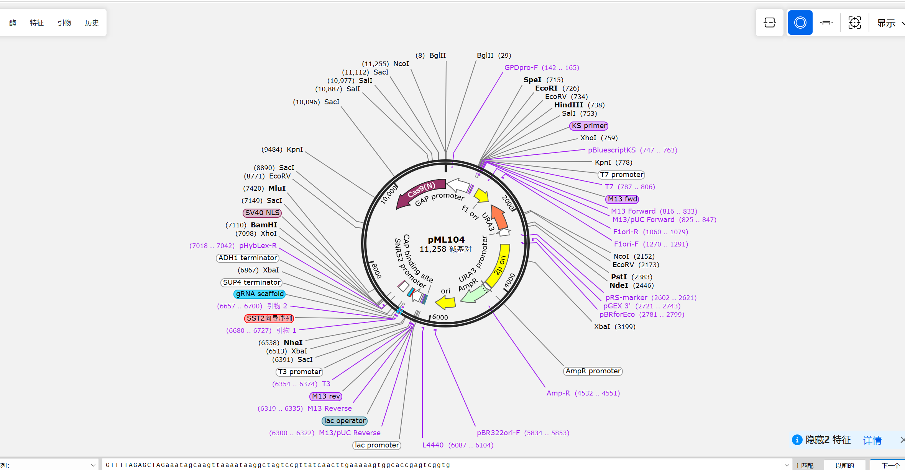
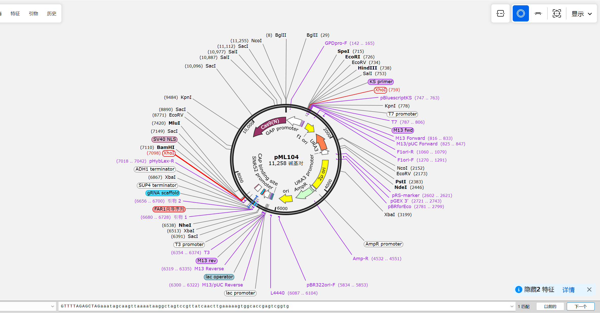
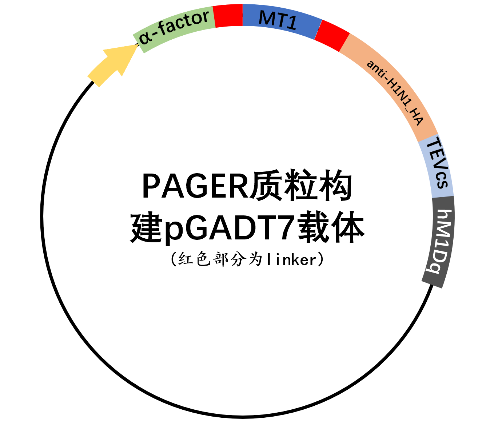
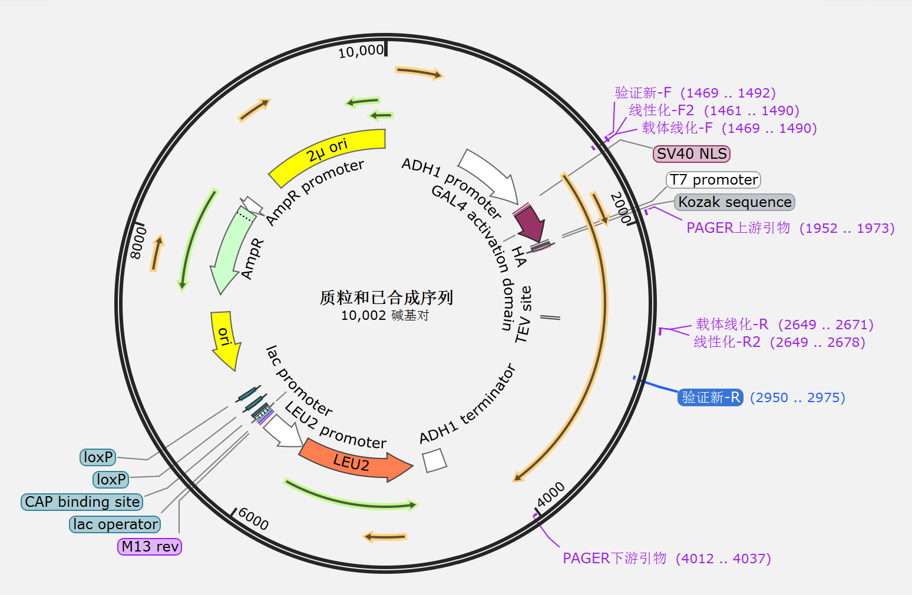
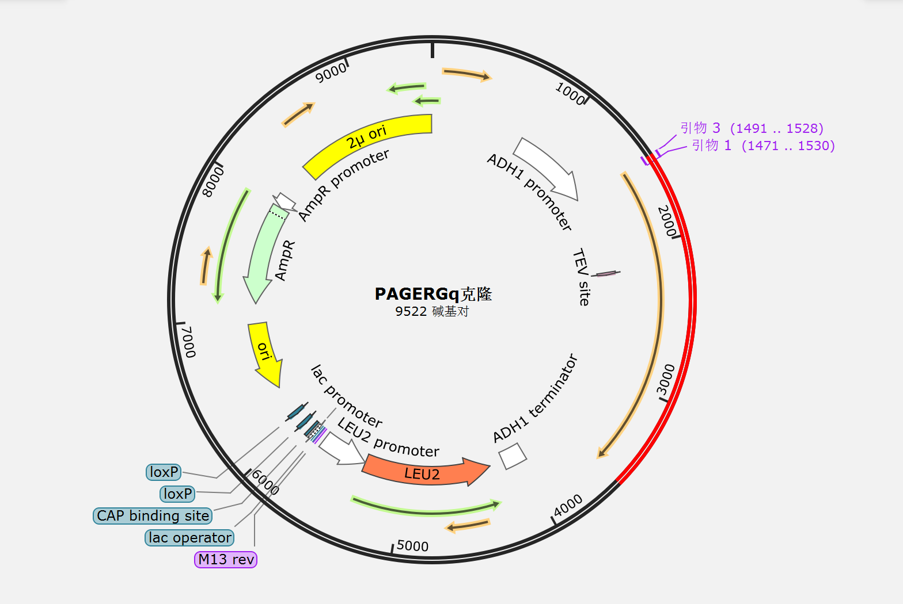
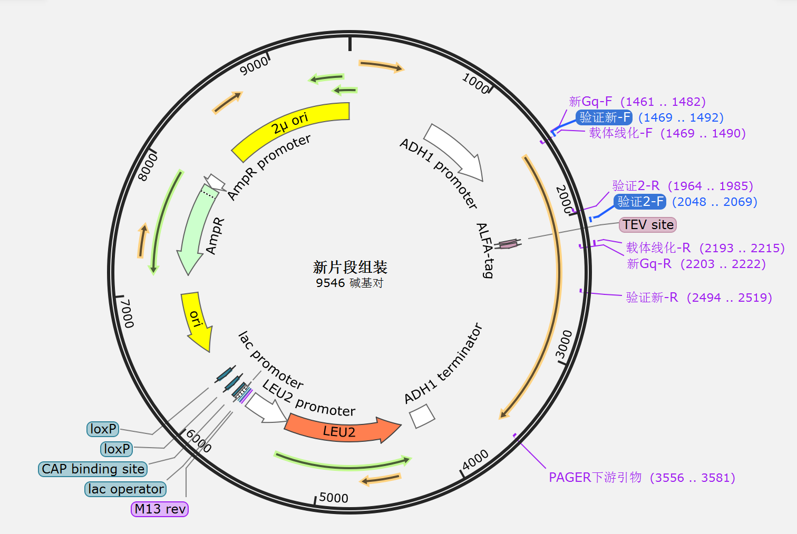
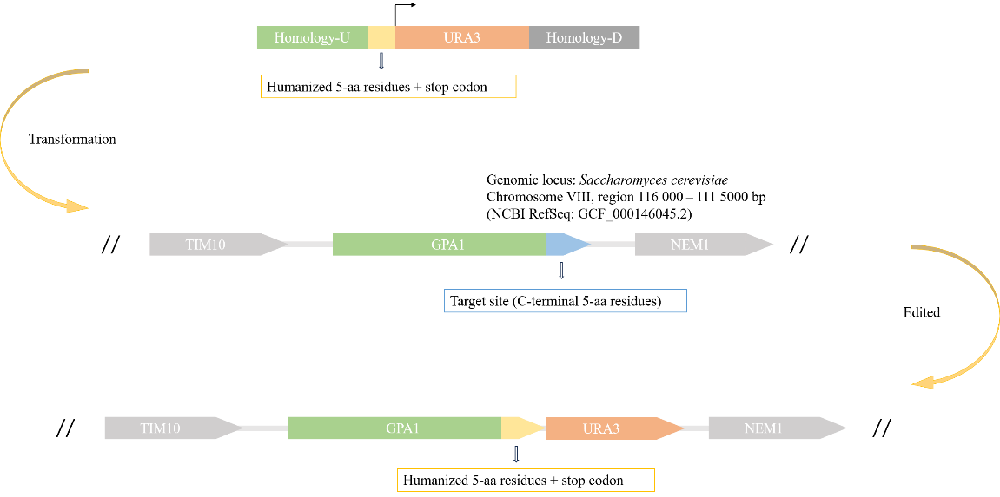
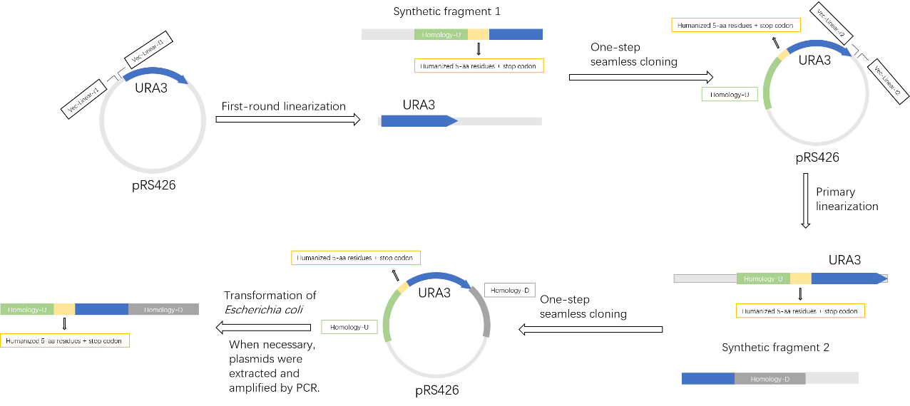

底盘酵母改造
目的
为放大酿酒酵母中特定信号通路的输出信号，本研究决定对负调控关键基因SST2及细胞周期阻滞因子FAR1进行敲除。通过消除信号衰减与周期抑制的双重限制，可有效提升信号通路的灵敏度与响应幅度。
通过设计引物将pML104载体线性化，再与设计的目标条带结合，构建pML04-sgRNA质粒，包含20bp的向导序列和gRNA完整骨架，可以定向识别并敲除酿酒酵母中的FAR1和SST2。
构建质粒图谱如下：


实验材料
2.1 菌株
| 菌株 | 基因型 | 来源 |
|---|---|---|
| 酿酒酵母 BY4741 | MATa his3Δ1 leu2Δ0 met15Δ0 ura3Δ0 |
2.2质粒
| 质粒 | 宿主菌 | 酵母筛选标记 | 细菌抗性 | 来源 |
|---|---|---|---|---|
| pML104 | 大肠杆菌 | URA3 | AmpR | Addgene #67638 |
2.3试剂耗材
| 类别 | 名称 | 品牌/货号 | 备注 |
|---|---|---|---|
| 培养基 | LB液体培养基 | 自制 | 灭菌，用于扩培质粒 |
| LB固体培养基 | 自制 | 灭菌，用于挑单菌落 | |
| YPD液体培养基 | 自制 | 用于酵母培养 | |
| YPD固体培养基 | 自制 | 用于培养转化后筛选 | |
| SD-Ura Broth | 其云生物/QM3004L | 筛选含pML104的酵母转化子 | |
| 抗生素 | 氨苄青霉素 | Macklin | 筛选抗性 |
| 试剂盒 | 质粒小提取试剂盒 | TIANGEN（DP103） | 提取pML104及构建成功的质粒 |
| 胶回收试剂盒 | B518131-0050 | 回收线性化载体便于后续连接 | |
| 酵母感受态细胞试剂盒 | 碧云天/D0310S | 酵母感受态制备及转化 | |
| 酶 | BamHⅠ-HF | NEB（R3136S） | 用于验证空质粒 |
| Ndel | NEB（R0111V） | 用于验证空质粒 | |
| PrimeSTAR Max DNA Polymerase | Takara | 用于反向PCR扩增 | |
| 缓冲液 | 10×rCutSmart缓冲液 | NEB | |
| DNA Marker | 15kb plus DNA Ladder | Solarbio | 琼脂糖凝胶电泳鉴定片段大小 |
| D2000 DNA Ladder | Solarbio | 琼脂糖凝胶电泳鉴定片段大小 | |
| 1kb plus DNA Ladder | Solarbio | 琼脂糖凝胶电泳鉴定片段大小 | |
| 染料 | SYBRGreen/GelRed | —— | —— |
| 6×Loading Buffer | Solarbio | —— | |
| 其他 | 甘油 | 自制 | 50%浓度 |
| 无菌水 | 自制 | —— |
2.4引物及合成序列
引物
| 名称 | 序列（5‘到3；） | 目的 |
|---|---|---|
| FAR1构建质粒线性化—F | cgATCTCCACTTGGGTTTTAGAGCTAGaaatagcaagttaaaataaggc | 通过反向扩增PCR线性化，利用引物带上同源臂 |
| FAR1构建质粒线性化—R | CTAAAACCCAAGTGGAGATCGTGACGCgatcatttatctttcact | |
| SST2构建质粒线性化-F | CGAGTTCTGTCCTGGTTTTAGAGCTAGaaatagcaagttaaaataagg | |
| SST2构建质粒线性化-R | CTAAAACCAGGACAGAACTCGTGGCGAgatcatttatctttcac | |
| 上臂FAR1-F | acacgtagactccacaaccttttcaccgg | 扩增FAR1修复模板上臂 |
| 上臂FAR1-R | aacaagagtttcgtttgaaaaaaaaatacacactctaccagagatcgtgacgctgaaaga | |
| 下臂FAR1-F | tggtagagtgtgtatttttttttca | 扩增FAR1修复模板下臂 |
| 下臂FAR1-R | gacattgcacttgcatcact | |
| 融合FAR1-F | acacgtagactccacaacctt | 搭配下臂FAR1-R进行融合PCR，将上臂与下臂合并 |
| 验证FAR1-F | tcagcgtcacgatctccac | 菌落PCR验证 |
| 上臂SST2-F | gcgtgtgcgactcagaatctggat | 扩增SST2修复模板上臂 |
| 上臂SST2-R | tacattatttatgtcttctaagctactacatacactgcaggaactcgtggcgagccaaaa | |
| 下臂SST2-F | ctgcagtgtatgtagtagcttagaagacat | 扩增SST2修复模板下臂 |
| 下臂SST2-R | gtgcgttagaattgttgtctg | |
| 融合SST2-R | gtgcgttagaattgttgtctgtcctg | 搭配上臂SST2-F进行融合PCR，将上臂与下臂合并 |
| 验证SST2-F | ggctcgccacgagttctgt | 菌落PCR验证 |
2.5仪器设备
| 仪器 | |||
|---|---|---|---|
| PCR仪 | ProFlex | —— | |
| 凝胶成像系统 | BIO RAD | —— | |
| 恒温摇床 | 上海知楚 | 37℃，220rpm | |
| 恒温培养箱 | BWS-10 | —— | |
| 水浴锅 | bluepard | —— | |
| 超净工作台 | Heal Force | —— | |
| Nanodrop | IMPLEN | 测核酸浓度及纯度 | |
| 分光光度计 | Eppendorf | 测量菌液OD600 | |
| 高压蒸汽灭菌锅 | Yamato | —— |
实验步骤
3.1 pML104质粒提取
3.1.1菌液活化与扩培
步骤1：一级活化（5 mL体系）
（1）超净台内，向含5 mL LB液体培养基（添加5ul的100 mg/mL氨苄青霉素）的无菌试管中，加入10μL甘油菌（剩余甘油菌放回-80℃保存，避免反复冻融）。
（2）37℃、200 rpm摇床振荡培养8-12h（过夜），至菌液OD₆₀₀≈1.5-2.0（菌液浑浊但未过度生长）。
步骤2：二级扩培（10mL体系，适配10kb大质粒）
（1）向含10mL LB液体培养基（添加10uL的100mg/mL氨苄）的无菌摇瓶中，加入0.67mL一级活化菌液。
（2）37℃、220 rpm摇床培养12-16 h（过夜）。
（3）测量菌液OD₆₀₀
3.1.2质粒提取
（1）菌体收集
将15 mL过夜菌液分装到1.5ml离心管中，各分装两次，使得一管中可以收集到约3ml菌液。12,000rpm 1min离心收集菌体
（2）柱平衡
向吸附柱CP3中加入500ul平衡液BL，12,000 rpm 1min离心，倒掉废液，将吸附柱放回收集管中。
（3）菌体裂解（全程轻柔操作，避免大质粒断裂）
①向菌体沉淀中加入250ul溶液P1（已加RNase A），用移液器吹打或涡旋，彻底重悬菌体，无明显菌块。
②加入250ul溶液P2，温和地上下颠倒离心管6-8次，室温放置2-3 min（最多不超过5 min），此时菌液应清亮粘稠。（禁止剧烈震荡或吹打）
③加入350ul溶液P3，立即温和颠倒6-8次混匀，出现白色絮状沉淀。12,000 rpm离心10min；若上清仍有沉淀，可再离心2-3 min。
（4）质粒结合与纯化
①小心吸取上清（避免吸入沉淀），转移到平衡好的吸附柱CP3中，12,000 rpm离心60sec，倒掉废液。
②向柱中加入600ul漂洗液PW（已加无水乙醇），12,000 rpm离心60sec，倒掉废液。
重复步骤②，再漂洗1次，确保杂质去除干净。
③12,000 rpm空转2min，彻底去除残留漂洗液；开盖置于室温放置3-5min，让乙醇完全挥发。
（5）大质粒洗脱
①将吸附柱转移到无菌1.5 mL离心管中，向吸附膜中央滴加50ul预热至65℃的EB洗脱缓冲液。
②室温放置2min，充分溶解质粒
③12,000 rpm离心2min，收集洗脱液。
④（可选，提升得率）将收集的洗脱液重新加回吸附柱中，室温放置2 min，再次离心2 min，合并洗脱液。
（6）测量及保存
①用Nanodrop测量提取的质粒浓度及纯度，若没有问题，放到-20℃冰箱备用
3.2 pML104-sgRNA质粒构建
3.2.1配制50ulPCR体系
取若干个0.2ml离心管，按以下体系加样，用移液枪吹打几次后短暂离心。
| 体积 | |
|---|---|
| 25ul | 2xMix（PrimeSTAR Max DNA Polymerase） |
| 2ul | 上游引物 |
| 2ul | 下游引物 |
| 2ul | 模板 |
| 19ul | ddH2O |
阴性体系将模板换成水
3.2.2设置PCR反应程序
| FAR1程序 | ||
|---|---|---|
| 温度 | 时间 | 循环数 |
| 98℃ | 1min | 1个循环 |
| 98℃ | 15s | 10个循环 |
| 53℃ | 15s | |
| 65℃ | 6min | |
| 98℃ | 15s | 25个循环 |
| 66℃ | 15s | |
| 65℃ | 5min | |
| 65℃ | 5min | 1个循环 |
| 4℃ | ∞ | |
| SST2程序 | ||
| --- | --- | --- |
| 温度 | 时间 | 循环数 |
| 98℃ | 1min | 1个循环 |
| 98℃ | 15s | 10个循环 |
| 50℃ | 15s | |
| 65℃ | 5min | |
| 98℃ | 15s | 25个循环 |
| 65℃ | 15s | |
| 65℃ | 5min | |
| 65℃ | 5min | 1个循环 |
| 4℃ | ∞ |
3.2.3 琼脂糖凝胶电泳
（1）配制0.8%的琼脂糖凝胶（以25ml为例）
①取0.2g琼脂糖粉末，倒入干净的锥形瓶中，加入0.25ml的1xTAE电泳缓冲液。；
②在加热前，精确称量并记录“锥形瓶+琼脂糖+缓冲液”的总质量；
③将锥形瓶放入微波炉中，加热30s，取出摇晃均匀。放入微波炉中，设置10s加热，等气泡消去，再次加热10s，相同操作持续6-8次，直至溶液变得完全透明澄清；
④加热完成后，将锥形瓶放置于天平上，采用逐滴添加的方式，补加纯水至初始总质量；
⑤添加0.25ul的GelRed，充分混匀，避免产生气泡；
⑥将梳子垂直插到制胶槽的一侧，倒入温热的凝胶溶液，等待15-30min，直至胶完全凝固（白色略透明状，按压无流动感），小心垂直拔出梳子，避免撕裂胶孔。
（2）跑琼脂糖凝胶电泳
①上样：DNA样品5-10ul（加适量6x上样缓冲液，例：5ul样品加1ul 6x上样缓冲液）
②电压：80V
时间：1h
3.2.4 切胶回收
①配制合适浓度的琼脂糖凝胶，电泳分离DNA片段。当DNA片段分离后，把凝胶放于紫外灯下，快速切下含目的DNA片段的凝胶，并尽量去除多余的凝胶。
②称取凝胶块的重量，并转移至1.5或2.0 mL离心管中。按100 mg凝胶块相当100 ul体积计算，加入1‑1.5倍体积Buffer GDP，50‑55℃水浴10‑15分钟，让凝胶块完全溶解。水浴期间，颠倒混匀3次加速溶胶。
注：若凝胶块重量为200 mg，则需加入200‑300 ul Buffer GDP。凝胶浓度超过2.0%时，加入1.5倍体积的Buffer GDP。凝胶(凝胶体积)溶胶后，再加入1倍体积(凝胶体积)异丙醇混匀后再按第三步进行操作。处理对温度敏感的DNA片段(复杂回文结构或易解链)，把凝胶处理成尽量小的碎片后，常温振荡10‑15分钟溶解凝胶，减少高温对DNA的解链和损伤。
③短暂离心收集管壁上的液滴。将HiPure DNA Mini Column I套在收集管中。把≤700 μl溶胶液转移至柱子中。12,000×g离心30‑60秒。
④（可选：溶胶液超过700 μl）倒弃滤液，把柱子套回收集管中。把剩余的溶胶液转移至柱子中。12,000×g离心30‑60秒。
⑤倒弃滤液，把柱子套回收集管中。加入150 ul Buffer GDP至柱子中。静置1分钟。12,000×g离心30‑60秒。
⑥倒弃滤液，把柱子套回收集管中。加入600 ul Buffer DW2（已用无水乙醇稀释）至柱子中。12,000×g离心30‑60秒。
注：Buffer DW2使用前，按瓶子上的标签指示，用无水乙醇进行稀释。
⑦倒弃滤液，把柱子套回收集管。加入300 ul Buffer DW2（已用无水乙醇稀释）至柱子中。12,000×g离心2分钟。
注：取出柱子时，不要让柱子底部接触到液体，若碰到了液体，则倒弃液体后再离心1分钟。对某些敏感应用(需将大部分洗脱液加入连接反应时)：打开柱子的盖子，空气干燥5‑10分钟以彻底去除乙醇。
⑧把柱子套在1.5 ml离心管中，加入15‑30ul Elution Buffer至柱子膜中央。放置2分钟。12,000×g离心1分钟。丢去柱子，把DNA保存于‑20℃。
注：若需要获得最高产量，建议重复第8步进行第二次洗脱。若回收大于5KB以上的片段时，最好把Elution Buffer预热至55℃，并重复2‑3次洗脱。重复洗脱时，可以把得到洗脱液再转移至柱子进行第二次或第三次洗脱，提高回收率的同时又可获得更高浓度的DNA。
⑨Nanodrop测定所得DNA的浓度跟纯度。
3.3修复模板扩增
3.3.1修复模板上臂、下臂扩增
（1）菌裂解制备模板
①取0.2ml离心管，加入10ul的无菌水
②观察转化平板，做好标记，使用无菌枪头轻轻接触菌落表面，蘸取少量菌体（肉眼可见即足够），直接将蘸有菌体的枪头投入到0.2ml的离心管中，混匀于无菌水中。
③（可选）吸取2.5ul菌液点于新的空白平板中，可保存菌样。（或直接弃去2.5ul的菌液）
④向剩余菌液加入0.833ul的20mM NaOH溶液
⑤轻轻吹打混匀，放入PCR仪中，设置程序，进行菌体裂解。
程序如下：
| 温度 | 时间 | 循环数 |
|---|---|---|
| 98℃ | 3min | 5个循环 |
| 4℃ | 2min | |
| 4℃ | ∞ |
⑥瞬时离心后涡旋振荡，再瞬时离心，取上清液作为样品。
（2）配制50ulPCR体系
取若干个0.2ml离心管，按以下体系加样，用移液枪吹打几次后短暂离心。
| 体积 | 组分 |
|---|---|
| 25ul | 2x PCR Mix |
| 2ul | 上游引物 |
| 2ul | 下游引物 |
| 5ul | 模板 |
| 16ul | ddH2O |
注：每组可以制备两管50ul的PCR反应体系，方便后续统一回收提高浓度。
（3）设置PCR反应程序
| FAR1、SST2上臂PCR程序 | ||
|---|---|---|
| 温度 | 时间 | 循环数 |
| 94℃ | 3min | 1个循环 |
| 94℃ | 30s | 30个循环 |
| 65℃ | 30s | |
| 72℃ | 30s | |
| 72℃ | 5min | 1个循环 |
| 4℃ | ∞ | |
| FAR1下臂程序 | ||
| --- | --- | --- |
| 温度 | 时间 | 循环数 |
| 94℃ | 3min | 1个循环 |
| 94℃ | 30s | 30个循环 |
| 53℃ | 30s | |
| 72℃ | 30s | |
| 72℃ | 5min | 1个循环 |
| 4℃ | ∞ | |
| SST2下臂程序 | ||
| --- | --- | --- |
| 温度 | 时间 | 循环数 |
| 94℃ | 3min | 1个循环 |
| 94℃ | 30s | 30个循环 |
| 55℃ | 30s | |
| 72℃ | 30s | |
| 72℃ | 5min | 1个循环 |
| 4℃ | ∞ |
（4）配制2%的琼脂糖凝胶，取5ulPCR产物（加1ul 6x上样缓冲液）进行琼脂糖凝胶电泳。观察条带位置及亮度。
（5）直接纯化
①将PCR反应液或酶促反应液转移至干净的1.5ml离心管中，加入五倍体积的Buffer B充分混匀。
②将上述混合液全部移入吸附柱，室温静置2 min。12,000 rpm离心30s。倒掉收集管中的液体，将吸附柱放入同一个收集管中。
③向吸附柱中加入500 ul Wash Solution Ⅱ，12,000 rpm离心30s。倒掉收集管中的液体，将吸附柱放入同一个收集管中。（Wash Solution Ⅱ首次使用前请检查是否已加入正确量的无水乙醇。）
④重复步骤3一次。
⑤将空吸附柱和收集管放入离心机，12,000 rpm离心1min。将吸附柱放置在一个新的离心管中，放置3‑5min，以彻底去除剩余的乙醇。（此步骤不可省略，否则剩余的乙醇会严重影响得率和后续实验。）
⑥在吸附膜中央加入30‑50ul预热到60℃的去离子水，室温静置1‑2min，12,000 rpm离心2min以洗脱DNA。将所得到的DNA溶液保存于‑20℃。（可选：利用洗脱下来的DNA溶液再重复该步骤一次，可提高回收率）
3.3.2第一轮融合PCR
（1）配制PCR体系
根据回收的FAR1、SST2上臂和下臂的浓度，以摩尔比1：1来计算加入的体积。第一轮不需要加入引物。
此处为了保证扩增序列的准确性，使用高保真酶。
| FAR1第一轮融合PCR体系 | |
|---|---|
| 体积 | 组分 |
| 25ul | 2xMix（PrimeSTAR Max DNA Polymerase） |
| 5.53ul | FAR1上臂 |
| 11.08ul | FAR1下臂 |
| 8.39ul | ddH2O |
| FAR1第一轮融合PCR体系 | |
| --- | --- |
| 体积 | 组分 |
| 25ul | 2xMix（PrimeSTAR Max DNA Polymerase） |
| 2.03ul | SST2上臂 |
| 3.59ul | SST2下臂 |
| 19.38ul | ddH2O |
（2）设置PCR程序
注：退火温度根据同源臂的Tm值进行设置
| FAR1第一轮融合PCR程序 | ||
|---|---|---|
| 温度 | 时间 | 循环数 |
| 98℃ | 5min | 1个循环 |
| 98℃ | 10s | 10个循环 |
| 60℃ | 15s | |
| 72℃ | 1min | |
| 72℃ | 10min | 1个循环 |
| 4℃ | ∞ | |
| SST2第一轮融合PCR程序 | ||
| --- | --- | --- |
| 温度 | 时间 | 循环数 |
| 98℃ | 5min | 1个循环 |
| 98℃ | 10s | 10个循环 |
| 60℃ | 15s | |
| 72℃ | 1min | |
| 72℃ | 10min | 1个循环 |
| 4℃ | ∞ |
3.3.3第二轮融合PCR
（1）配制PCR体系
此处为了保证扩增序列的准确性，使用高保真酶。
| FAR1第二轮融合PCR体系 | |
|---|---|
| 体积 | 组分 |
| 25ul | 2xMix（PrimeSTAR Max DNA Polymerase） |
| 1ul | 融合FAR1-F |
| 1ul | 下臂FAR1-R |
| 2ul | 第一轮PCR得物 |
| 21ul | ddH2O |
| SST2第二轮融合PCR体系 | |
| --- | --- |
| 体积 | 组分 |
| 25ul | 2xMix（PrimeSTAR Max DNA Polymerase） |
| 1ul | 融合SST2-R |
| 1ul | 上臂SST2-F |
| 2ul | 第一轮PCR得物 |
| 21ul | ddH2O |
（2）设置PCR程序
| FAR1第二轮融合PCR程序 | ||
|---|---|---|
| 温度 | 时间 | 循环数 |
| 98℃ | 5min | 1个循环 |
| 98℃ | 10s | 25个循环 |
| 57℃ | 15s | |
| 72℃ | 1min | |
| 72℃ | 10min | 1个循环 |
| 4℃ | ∞ | |
| SST2第二轮融合PCR程序 | ||
| --- | --- | --- |
| 温度 | 时间 | 循环数 |
| 98℃ | 5min | 1个循环 |
| 98℃ | 10s | 25个循环 |
| 62℃ | 15s | |
| 72℃ | 1min | |
| 72℃ | 10min | 1个循环 |
| 4℃ | ∞ |
（3）琼脂糖凝胶电泳验证
配制2%的琼脂糖凝胶，90V，50min，观察条带位置及亮度。
（4）回收纯化
注：此实验需条带清晰且无非特异性条带（若有非特异性条带说明前面的第一轮融合PCR实验不理想，需要重新设计方案），因此可以采用直接纯化的方式。
3.4 酵母感受态细胞制备
（1）菌种活化：取‑80℃保存的酿酒酵母甘油菌在YPD平板培养基上划线，30℃倒置培养2‑4天以活化菌种。
（2）接种：使用接种环或无菌吸头挑取一个新鲜的酵母单菌落接种到10ml YPD液体培养基中。
（3）培养：30℃，220rpm培养过夜。
（4）再接种培养：将过夜培养的菌液转接至50ml YPD液体培养基中，使其起始OD₆₀₀介于0.2‑0.3之间。30℃，250‑300rpm培养2‑3小时，使OD₆₀₀达到0.4‑0.6。
注：每10ml菌液可制备4管100ul的感受态。以下操作步骤适用于10ml菌液，感受态具体用量可根据实际情况进行制备。
（5）制备感受态细胞：
①当新鲜培养的菌液OD₆₀₀达到0.4‑0.6时，室温3000×g离心3分钟，弃上清，保留菌体。
②取7ml Buffer A充分重悬离心收集的菌体，室温3000×g离心3分钟弃掉上清，保留菌体。
③取400ul Buffer B重悬菌体，室温孵育10分钟。孵育10分钟结束后，酵母感受态细胞就制备完毕了，后续就可以按照100ul每管分装于1.5ml无菌离心管中并进行酵母感受态细胞的转化了。
注：制备好的感受态最好立即使用；也可以在4℃下保存1周，但是效果会逐渐下降；或者可以添加甘油至终浓度至15%并混匀，随后冻存于‑80℃冰箱，至少3个月内有效。
3.5酿酒酵母转化
①将0.1‑1ug质粒DNA和10ul加热变性的Carrier DNA吹打混匀后加入到100ul感受态细胞中并用手轻弹混匀。
②加入600ul Buffer C溶液，上下颠倒混匀。在30℃的水浴孵育45分钟。
③上一步骤结束后加入70ul DMSO，轻轻上下颠倒混匀，在42℃的水浴孵育15分钟，随后立即置于冰浴孵育3‑5分钟。
④室温12000‑14000g离心10秒，弃上清，用100ul Buffer A重悬菌体。
⑤将重悬的菌液全部涂布于相应的筛选培养基平板，30℃倒置培养2‑3天，直至出现单个菌落。
3.6 菌落PCR验证
3.6.1样品准备
（1）取0.2ml离心管，加入10ul的无菌水
（2）观察转化平板，做好标记，使用无菌枪头轻轻接触菌落表面，蘸取少量菌体（肉眼可见即足够），直接将蘸有菌体的枪头投入到0.2ml的离心管中，混匀于无菌水中。
（3）（可选）吸取2.5ul菌液点于新的空白平板中，可保存菌样。（或直接弃去2.5ul的菌液）
（4）向剩余菌液加入0.833ul的20mM NaOH溶液
（5）轻轻吹打混匀，放入PCR仪中，设置程序，进行菌体裂解。
程序如下：
| 温度 | 时间 | 循环数 |
|---|---|---|
| 98℃ | 3min | 5个循环 |
| 4℃ | 2min | |
| 4℃ | ∞ |
（6）瞬时离心后涡旋振荡，再瞬时离心，取上清液作为样品。
3.6.2 配制菌落PCR体系（以10ul验证体系为例）
体系如下：
| 体积 | 组分 |
|---|---|
| 5ul | 2x PCR Mix |
| 0.2ul | 上游引物 |
| 0.2ul | 下游引物 |
| 1ul | 模板 |
| 3.6ul | ddH20 |
3.6.3 设置PCR程序
| FAR1程序 | ||
|---|---|---|
| 温度 | 时间 | 循环数 |
| 94℃ | 3min | 1个循环 |
| 94℃ | 30s | 30个循环 |
| 57℃ | 30s | |
| 72℃ | 30s | |
| 72℃ | 5min | 1个循环 |
| 4℃ | ∞ | |
| SST2程序 | ||
| --- | --- | --- |
| 温度 | 时间 | 循环数 |
| 94℃ | 3min | 1个循环 |
| 94℃ | 30s | 30个循环 |
| 60℃ | 30s | |
| 72℃ | 30s | |
| 72℃ | 5min | 1个循环 |
| 4℃ | ∞ |
3.6.4电泳检测
（1）配制2%的琼脂糖凝胶，取5ulPCR产物（加1ul 6x上样缓冲液）进行琼脂糖凝胶电泳。
（2）电压、时间：90V，50分钟
3.6.5结果观察
将胶放置于凝胶成像系统中，观察目标条带亮度及位置。
3.7 样品测序
3.7.1测序样品制备
（1）配制PCR体系
| 体积 | 组分 |
|---|---|
| 25ul | 2x PCR Mix |
| 2ul | 上游引物 |
| 2ul | 下游引物 |
| 2ul | 模板 |
| 19ul | ddH20 |
阴性对照用水代替模板
（2）设置PCR反应程序
| FAR1程序 | ||
|---|---|---|
| 温度 | 时间 | 循环数 |
| 94℃ | 3min | 1个循环 |
| 94℃ | 30s | 35个循环 |
| 60℃ | 30s | |
| 72℃ | 1min10s | |
| 72℃ | 5min | 1个循环 |
| 4℃ | ∞ | |
| SST2程序 | ||
| --- | --- | --- |
| 温度 | 时间 | 循环数 |
| 94℃ | 3min | 1个循环 |
| 94℃ | 30s | 30个循环 |
| 61℃ | 30s | |
| 72℃ | 1min | |
| 72℃ | 5min | 1个循环 |
| 4℃ | ∞ |
（3）电泳初步验证
①配制1%琼脂糖凝胶，90V，5min。
②观察条带位置及亮度，若无异常，可取30ul进行PCR产物测序。
3.8 功能验证
3.8.1生长曲线测定实验
（1）菌株与处理
| 菌株 | 基因型 | 处理 |
|---|---|---|
| BY4741（野生型对照） | 野生型 | 0、1、10uMα-factor |
| 待测敲除突变体 | 目标基因敲除 | 0、1、10uM α-factor |
注：可根据实验需要替换不同敲除菌株（如 Δfar1、Δste2、Δsst2 等）。
（2）具体步骤
①预培养：挑取单菌落接种于5 mL YPD液体培养基中，30℃、200 rpm振荡过夜培养。
②二次培养：取适量过夜菌液转接至30 mL新鲜YPD中，30℃、200 rpm振荡培养至OD600达0.4~0.6（对数生长期）。
③加药处理：将菌液分装至无菌锥形瓶中，分别加入α-factor至终浓度0、1、10uM。（每一组浓度做三个平行样）
④生长曲线测定：立即取样测定OD600值作为0h时间点，随后每隔1h取样测定一次，连续监测6h。
（3）数据记录
记录各时间点的OD600值，绘制生长曲线
PAGER 受体构建与验证
目的

①第一次设计的基因序列：
CATATGAGATTTCCTTCTATTTTTACTGCTGTTTTGTTTGCTGCTTCTTCTGCTTTAGCAGGTGGTGGTTCTGGTGGTGGCTCTGGTGGTGGTAGTTTGACTTGTGTTACTTCTAAATCAATTTTTGGTATTACTACTGAAAATTGTCCTGATGGTCAAAATTTGTGTTTTAAAAAATGGTATTATATAGTTCCTAGATATTCTGATATAACATGGGGTTGTGCAGCTACTTGTCCTAAACCAACTAATGTTAGAGAAACTATTAGATGTTGTGAAACAGATGGTGGTGGTTCTGGCGGTGGTTCTGGTGGAGGTTCTCAAGTTCAATTAGTTGAATCTGGTGGTGGTTTAGTTCAACCAGGTGGTTCTTTAAGATTATCATGTGCTGCTTCAGGTTCATTTTTCTCTAGATATAGGATGGGTTGGTACAGACAAGCTCCTGGTGAACAAAGAGAATTAGTTGCTTCAATTGCTTATGATGGTTCTACATCATACGCTGATCCTGTTAAAGGTAGATTCACTATTTCTAGAGATAATGCAAATACAGTTCATTTGCAAATGTATTCTTTAAAACCAGATGATACAGCTGTTTATTACTGTAACTTGGACCCACCTGGTATTTTGTATTGGGGTCAAGGTACTCAAGTGACAGTTAGTAGTGAAAATTTGTACTTTCAATCAATGAATACTAGTGCTCCTCCTGCAGTATCTCCTAATATAACAGTTTTAGCACCAGGCAAGGGTCCATGGCAAGTTGCTTTTATTGGTATTACTACTGGTTTACTTAGCTTAGCTACTGTTACAGGTAATTTGTTAGTTTTAATTAGTTTTAAAGTTAACACTGAACTTAAAACTGTTAATAATTACTTTTTACTAAGTTTAGCTTGTGCTGATTTGATAATTGGTACTTTTTCTATGAACTTATACACAACTTACTTATTAATGGGTCATTGGGCTTTAGGTACTTTAGCTTGTGATCTTTGGTTAGCTTTAGATTGTGTTGCTTCTAATGCATCTGTTATGAATTTGCTATTAATTTCCTTTGATAGATATTTTTCCGTAACTAGGCCTTTAAGTTATAGAGCTAAAAGAACTCCTAGGAGAGCTGCTTTAATGATTGGTTTAGCATGGTTAGTTTCTTTTGTCTTGTGGGCTCCAGCAATTTTATTTTGGCAATATCTGGTTGGTGAAAGAACTGTTTTAGCTGGTCAATGTTATATTCAATTTTTATCACAACCAATAATTACATTTGGAACAGCTATGGCTGGTTTTTATCTTCCTGTTACTGTTATGTGTACTTTATATTGGAGAATATATAGAGAAACAGAAAATAGAGCTAGAGAATTAGCTGCTTTACAAGGTAGTGAAACTCCAGGTAAAGGTGGTGGTAGTTCTTCATCTTCTGAAAGATCTCAACCAGGTGCTGAAGGTTCTCCTGAAACACCACCAGGTAGATGTTGTAGATGTTGTAGAGCTCCAAGATTATTGCAAGCTTACTCATGGAAAGAAGAAGAAGAGGAAGATGAAGGTTCTATGGAATCATTAACATCATCTGAAGGTGAAGAACCAGGTTCTGAAGTTGTTATTAAGATGCCAATGGTTGATCCTGAAGCTCAAGCTCCAACTAAACAACCACCTAGGTCCTCTCCAAACACTGTTAAAAGACCAACTAAAAAAGGTAGAGATAGAGCTGGTAAAGGTCAAAAACCTAGGGGTAAAGAACAATTAGCTAAAAGAAAAACTTTTTCATTAGTTAAAGAAAAGAAAGCTGCTAGAACTTTGAGTGCTATTTTATTAGCTTTTATTCTAACTTGGACACCATATAATATAATGGTTTTAGTTTCTACATTTTGTAAAGATTGTGTTCCTGAAACTCTTTGGGAATTAGGTTACTGGTTATGTTATGTTAATAGTACTATTAATCCAATGTGTTATGCATTGTGTAATAAGGCTTTTAGAGATACTTTTAGATTATTGTTATTATGTAGATGGGATAAAAGAAGATGGAGAAAAATTCCAAAAAGACCTGGTTCTGTTCATAGAACTCCTAGTAGACAATGTTAAGGATCC

②第二次设计的图谱（序列不变，删除启动子与目的片段之间的多余序列）：

③第三次设计的基因序列（按照原文献修改了Linker）：
AGCATACAATCAACTCCAAGCTTTGCAAAGATGAGATTTCCAAGCATATTCACTGCAGTTTTGTTCGCTGCTTCTTCTGCCTTGGCCTTGACTTGTGTTACTTCTAAATCTATTTTTGGTATTACTACTGAAAACTGTCCAGATGGTCAAAACTTGTGTTTTAAGAAATGGTACTACATTGTTCCAAGATATTCTGATATTACTTGGGGTTGTGCTGCTACTTGTCCAAAGCCAACTAACGTTAGAGAAACTATTAGATGTTGTGAAACTGATAAGTGTAATGAACAAGTTCAATTGGTTGAATCTGGTGGTGGTTTGGTTCAACCAGGTGGTTCTTTAAGATTGTCCTGTGCTGCTTCTGGTTCTTTCTTCTCTAGATATAGAATGGGTTGGTACAGACAAGCGCCAGGTGAACAAAGAGAATTAGTTGCTTCTATTGCTTACGACGGTTCCACTTCTTACGCTGATCCAGTTAAAGGTAGATTCACTATTTCCAGAGATAACGCTAACACTGTTCACTTGCAAATGTACTCTTTGAAGCCAGATGATACTGCTGTTTACTATTGTAACTTGGATCCACCAGGTATTTTGTACTGGGGTCAAGGTACGCAAGTTACTGTTTCTTCTGGTGAAAACTTGTACTTCCAATCTGGTTCTCCATCTAGATTGGAAGAAGAATTAAGAAGAAGATTGACTGAACCAGGTGGTGGTTCTGGTGGTGGTTCCGGTACCATGAATACTAGTGCTCCTCCTGCAGTATCT

实验材料
| 类别 | 名称 | 品牌/货号 |
|---|---|---|
| 菌株 | Top10感受态细胞 | Adamas-lif和biosharp |
| BY4741 | 公司赠与 | |
| 质粒 | pGADT7 ZB56914 | Sangon Biotech |
| 培养基 | LB液体培养基 YPD液体培养基 YPD固体培养基 SD-Leu液体培养基 SD-Leu固体培养基 SD-His-Leu液体培养基 | SangonBiotech(M317KA3479) 海博生物（HB5193-1） Solarbio（LA0220） 其云生物（） 其云生物（QM3002S） 其云生物（） |
| 抗生素 | 氨苄青霉素 | Macklin |
| 试剂盒 | 质粒小提试剂盒 酿酒酵母感受态细胞制备及转化试剂盒 酵母质粒提取试剂盒 凝胶DNA小量回收试剂盒 | TIANGEN（DP103） 碧云天（D0310M） Solarbio（D1160） Magen（D2111-02） |
| 内切酶 | BamHI-HF NdeI | NEB（R3136S） NEB（R0111V） |
| 缓冲液 | 10× rCutSmart缓冲液 50×TAE 缓冲液 1×Tris-甘氨酸电泳缓冲液 10×TBS-T漂洗缓冲液 | NEB Solarbio（T1060） Solarbio（T1072） SparkJade（ED0010） |
| DNA Marker | DL 15000 DNA Ladder 1kb plus DNA Ladder D2000 DNA Ladder | Solarbio（M1700） Solarbio（M1500） Solarbio（M1060） |
| 染料 | 核酸染料 （SuperRed） 核酸染料 （GelRed） | Biosharp Biotium（41003） |
| 其他试剂 | 50%甘油 NaOH D-山梨醇 柠檬酸钠 4%多聚甲醛 RIPA 甲醇 甘氨酸 Tris-base BSA 蜗牛酶 融壁酶 TEV酶 DCZ DMSO | 沪试（10010618） 麦克林（） Solarbio（S8090） SparkJade（EE0001） SparkJade（EA0002） 麦克林（） 麦克林（） AMRESCO(0497) 麦克林（） 源叶（S10083-5g） 源叶（S10107-1g） 碧云天（P2310S） AbMole（M11551） 碧云天（D0310M） |
| 仪器 | 恒温摇床 超净工作台 离心机 电泳仪 凝胶成像系统 NanoDrop 分光光度计 | 上海知楚 Heal Force Eppendorf BIO RAD BIO RAD IMPLEN Eppendorf |
| 引物 | 线性Gq-F 线性Gq-R 验证上游1 验证下游1 载体线化-F 载体线化-R 新Gq-F 新Gq-R 验证新-F 验证新-R 线性化-F2 线性化-R2 验证2-F 验证2-R | CAGCAAACAAAACAGCAGTAAAAATAGAAG GAAATCTCATCTTTGCAAAGCTTGGAGTTG ATGAGATTTCCTTCTATTTTTACTGCTGTTTTGTTTGC TCAAGCTATACCAAGCATACAATCAACTCC TCACTTGAGTACCTTGACCCCAATACAAAA CTTTGCAAAGCTTGGAGTTGAT ATGAATACTAGTGCTCCTCCTGC AGCATACAATCAACTCCAAGCT AGATACTGCAGGAGGAGCAC ATCAACTCCAAGCTTTGCAAAGAT AGAAGCAACACAATCTAAAGCTAACC CTTTGCAAAGCTTGGAGTTGATTGTATGCT ATGAATACTAGTGCTCCTCCTGCAGTATCT TTTGTACTGGGGTCAAGGTACG TTGCAAGTGAACAGTGTTAGCG |
| 抗体 | TEV Cleavage Site Polyclonal Antibody CoraLite® Plus 488-conjugated 6*His, His-Tag Monoclonal antibody Recombinant human GAPDH protein musoarinic Acetylcholine Receptor 1 Rabbit Polyclonal Antibody HRP-Goat Anti-Mouse HRP-Goat Anti-Rabbit | Invitrogen-Thermo Fisher Scientific （ZF395628） proteintech （CL488-66005） proteintech （60004-1-Ig） 华安生物（ER1913-39） proteintech （RGAM001） proteintech （RGAR001） |
实验步骤
一、PAGER质粒大肠杆菌转化及质粒提取与验证
质粒稀释：PAGER质粒冻干粉加40 μL无菌水，配制成100 ng/μL；取1 μL质粒+4 μL无菌水，混匀得到20 ng/μL稀释液。
1、转化步骤
（1）Top10感受态冰上解冻10 min，分装入3管，标记实验组1、2，对照组3。
（2）实验组各加2.5 μL稀释质粒，对照组加2.5 μL无菌水，轻弹混匀，冰浴30 min。
（3）42℃热激90秒，迅速冰浴2–3 min。
（4）每管加900 μL无抗LB，37℃、220 rpm复苏60 min。
（5）各取100 μL菌液涂布平板，实验组4块，对照组1块。
（6）正置吸收10 min，倒置37℃培养12–16 h。
2、扩培实验
配制 LB+Amp液体培养基 向50mL LB液体培养基，加入50μL Amp母液，混匀；分装5
支无菌试管，每管5 mL。
挑单菌落与摇菌 从4块实验组平板各挑1个单菌落，接种至对应试管，一支试管不添加菌落，作为阴性对照；37℃、220 rpm振荡培养12–16 h（过夜）。
3、质粒提取实验（2026.3.10）
（1）菌体收集：4管5 mL菌液分三次12000 rpm离心1 min，弃尽上清。
（2）柱平衡：CP3吸附柱加500 μL BL，12000 rpm离心1 min，弃废液。
（3）菌体裂解：加250 μL P1重悬；加250 μL P2轻柔颠倒混匀，静置3 min；加350 μL P3立即混匀，12000 rpm离心10 min。
（4）质粒结合与漂洗：上清过柱，离心弃液；加600 μL PW漂洗2次；空离2 min，室温晾干3 min。
（5）质粒洗脱：加100 μL 65–70℃预热 EB，静置4 min，离心2 min；洗脱液回柱再离心，合并洗脱液。
（6）浓度测定：NanoDrop 检测，质粒浓度、A260/A280均符合酵母转化要求。
4、第四阶段：PAGER质粒双酶切验证（2026.3.11）
（1） 酶切反应体系（50 μL）
组分
质粒DNA(1μg) 1：2μL；2：2μL；3：3μL；4：2.5μL
10xBuffer 5μL
NdeI 1μL
BamHI 1μL
ddH₂O 1：41μL；2：41μL；3：40μL；4：40.5μL
阴性:1号取0.5μL+ 9.5μL ddH₂O+ 2μL 6×Loading buffer
（2）酶切操作
①冰上操作，按照上述体系加样，加样顺序：水→缓冲液→DNA→酶（最后加）。
②轻弹混匀，短暂离心，37℃水浴酶切1 h。
③取 5µl 酶切反应液，加入 1µl的 6× DNA loading buffer。
（3） 琼脂糖凝胶电泳
①制备0.8%琼脂糖凝胶，称取 0.4 g琼脂糖→加入50ml 1× TAE 缓冲液→微波溶解→冷却
至60°C→加核酸染料GelRed→ 倒入插好梳子制胶槽。
②上样：Marker、未酶切质粒、酶切产物各加入5µl。
③电泳条件：80 V，60–90 min。
④凝胶成像系统观察条带。
二、BY4741酿酒酵母的转化及验证
1、BY4741感受态细胞制备
（1）菌种活化
从甘油管或平板上挑取BY4741单菌落，在YPD平板划线，30℃倒置培养2-3天，长出清晰单菌落。（先前已完成）
（2）种子培养
挑取1个单菌落接种到 10 mL YPD液体培养基 中，30℃、250rpm摇过夜（约16h）。
（3）转接扩培（关键步骤）
将过夜菌转接至 50 mL YPD液体培养基，使起始OD₆₀₀ = 0.2-0.3。
30℃、250rpm摇菌 2-3小时，直至OD₆₀₀达到 0.4-0.6（对数中期，转化效率最高）。
（4）收集菌体
取10 mL菌液，室温3000rcf离心3分钟，弃上清。
（5）制备感受态
①加7 mL Buffer A重悬菌体，室温3000rcf离心3分钟，弃上清。
②加400 μL Buffer B重悬菌体，室温孵育10分钟此时即为感受态细胞
2、质粒转化
（1）转化体系（单次反应，100 μL感受态）
BY4741感受态细胞100μL 、质粒2μL和热变性Carrier DNA10μL （使用前100℃加热15分钟，立即冰浴冷却15分钟）
（2）操作流程
①加样混匀
在1.5 mL离心管中加入100 μL BY4741感受态细胞，再加入2μL质粒和10μL Carrier DNA，用手指轻弹管底混匀（禁止涡旋或枪吹打）。
②转化孵育
加入600 μL Buffer C，轻轻颠倒混匀，30℃水浴孵育30分钟。
③热激处理（关键）
加入70 μL DMSO，轻轻上下颠倒混匀，42℃水浴热激15分钟，立即置于冰浴冷却3-5分钟。
④离心收集菌体
室温14000rcf离心10秒，弃上清。
⑤重悬涂板
用100 μL Buffer A轻轻重悬菌体沉淀，将菌液全部涂布于含氨苄青霉素的YPD筛选平板上。
⑥培养观察
平板30℃倒置培养2-3天，直至长出单菌落。
三、UNIQ-10柱式酵母含PAGER质粒DNA抽提实验方案
1、实验前准备
（1）试剂预处理
①RNase A处理：将试剂盒中210 μL RNase A（50次规格）全部加入15 mL Solution I中，颠倒混匀，4℃保存，有效期6个月，做好标记。
②Wash Solution配制：向Wash Solution中加入4倍体积的无水乙醇，颠倒混匀，室温密封保存，每次使用后旋紧瓶盖防止乙醇挥发。
③Snailase溶解：取试剂盒中Snailase干粉，加入Snailase Storage Buffer（50次规格为2.5 mL），轻轻涡旋溶解，4℃放置过夜充分溶解后分装，-20℃冻存备用。
④其他准备：将水浴锅调至37℃；准备无水乙醇、β-巯基乙醇；检查Solution II、Solution III是否有沉淀，若有37℃溶解后冷却至室温使用。
（2）样品准备
对于高拷贝质粒：取2mL的离心管，取4mL对数生长期酵母培养物8000 rpm离心2 min收集菌体，倒尽或吸干培养基。
2、标准抽提步骤（适配10 kb质粒）
（1）酵母细胞壁去除（关键步骤）
①菌体沉淀中，按每20 mg湿菌重加入600 μL Snailase Reaction Buffer，即1200μL Snailase Reaction Buffer。
②加入2.4μL β-巯基乙醇和100μL 已溶解的Snailase，吹打或振荡至彻底悬浮菌体。
③37℃水浴孵育3 h，期间每隔30 min轻轻颠倒混匀一次。
④5000 rpm离心10 min，弃上清，收集沉淀。
（2）菌体裂解
①向沉淀中加入500μL Solution I（含RNase A）,吹打重悬。
②加入500μL Solution II，立即温和颠倒离心管5-10次混匀，室温静置2-4 min（10 kb质粒裂解时间不超过3 min，避免过长导致质粒断裂），以溶液澄清且变粘稠为裂解终点。
③加入700μL Solution III，立即温和颠倒离心管5-10次混匀，室温静置2 min，12000 rpm离心10 min，取上清。
（3）吸附与洗涤
①将上清全部小心移入吸附柱（最大上样量750 μL，裂解液过多可分次上柱），室温放置2 min，8000 rpm离心2 min，倒掉收集管废液。
②向吸附柱中加入500 μL Buffer DW1，10000 rpm离心1 min，倒掉废液。
③向吸附柱中加入500 μL Wash Solution，10000 rpm离心1 min，倒掉废液，重复此步骤1次。
④将空吸附柱和收集管放入离心机，12000 rpm离心2 min，彻底去除残留乙醇。
（4）质粒洗脱（10 kb质粒优化）
①将吸附柱转移至干净的1.5 mL离心管中，在吸附膜中央加入50-100 μL Elution Buffer（洗脱体积不低于30 μL，10 kb质粒建议预热Elution Buffer至60℃，或加液后37-60℃温浴2 min）。
②室温静置2 min，10000 rpm离心1 min，收集洗脱液，即为高纯度酵母质粒DNA。
四、酵母菌落PCR验证
1、样品制备： 10μl无菌水+挑菌混匀，取2.5 μl
菌液点在平板上，加入0.833μl 0.2M的NaOH混匀，98℃ 3min、4℃ 2min，5个循环裂解。
2、PCR体系：
2×PCR Mix 25μl
样品1μl
验证上游引物(10mM) 1μl
验证下游引物(10mM) 1μl
无菌水22μl
3、PCR程序：
94℃ 3min
94℃ 30s
58℃ 30s 35×
72℃ 40s
72℃ 5min
16℃ ∞
五、WB实验（原实验方案）
1、酵母培养与样品制备
（1）DNA琼脂糖凝胶电泳验证成功后的酵母扩培，摇床过夜；
（2）液体培养后取适量菌液（取1.5ml），4℃ 12000rcf 1min离心弃上清;
（3）加1.5mLPBS重悬清洗，4℃ 12000rcf 1min离心弃上清；（重复两次）
（4）加入100μl 100mg/ml的蜗牛酶30℃破壁1h；
（5）4℃ 4000rcf 5min离心弃上清，加1mLPBS重悬清洗，4℃ 4000rcf 1min离心弃上清，重复两次；
（6）RIPA裂解（事先加入20μl的100mM PMSF到2mL的RIPA中，现配现用）；
①根据沉淀量，加入 100 - 200 μL 含抑制剂的RIPA裂解液（若菌体多，用200μL）；
②用移液枪轻轻吹打至无块状沉淀，冰上静置裂解 10 分钟，期间每2分钟涡旋振荡一次（每次10秒），帮助膜蛋白充分溶解；
③裂解完成后，4℃，5000g 离心5分钟；
④小心吸取上清液，移至新EP管；
2、SDS-PAGE
（1）制样：取150μL膜蛋白溶液，加50μL 4×蛋白质上样缓冲液，加热：50°C，10分钟→70°C，10分钟；
（2）上样：每孔上样20 μL总膜蛋白，同时留一孔加蛋白Marker，阴性对照同样处理；
（3）电泳：10% SDS-PAGE，80V（浓缩胶）→120V（分离胶）；
（4）转膜：PVDF膜（甲醇活化），湿转100V，90分钟，冰浴；
转膜液
| 试剂 | 用量 |
|---|---|
| Glycine（甘氨酸） | 14.4g |
| Tris-base | 3.03g |
| 甲醇 | 200mL |
| ddH2O | up to 1L |
3、Far-Western 检测（核心）
（1）封闭：
用5% BSA/TBST（或5%脱脂奶粉/TBST）封闭膜，室温1小时，封闭结束后倒掉封闭液，TBST洗3次，85rpm，每次10分钟；
（2）孵育MT1一抗：
①用5% BSA/TBST稀释一抗（推荐1:1000-1:2000）；
②过夜4℃孵育16h；
③回收一抗，TBST洗3次，85rpm，每次10分钟；
（4）孵育二抗：
①用5% BSA/TBST稀释HRP-山羊抗小鼠IgG（1:5000）。
②室温孵育1小时。
③回收二抗，TBST洗3次，85rpm，每次10分钟；
5.、显色：
将ECL底物按说明书1：1混匀，覆盖膜表面，孵育1-2分钟。用化学发光成像仪采集图像。
六、免疫荧光（功能验证）
1、溶液配制：①4%的多聚甲醛（用山梨醇缓冲液稀释）；②5%的BSA（用山梨醇缓冲液稀释）；③抗体稀释（3微升抗体+597微升5%BAS）
2、培养与收集：将酵母培养至对数生长期取1mL，4℃ 3000g 离心5min，弃上清收集菌体沉淀，用山梨醇缓冲液重悬洗涤菌体，4℃ 12000g离心1min，重复两次去除培养基杂质。
3、固定：直接向细胞培养液中加入200μL的4%多聚甲醛，在室温下静置固定20min。清洗：4℃800g离心5min去除固定液，用200μL山梨醇缓冲液清洗细胞，4℃ 800g 5min，重复两次。
4、破壁：加入200μL梨醇缓冲液和20μL100mg/mL的蜗牛酶30℃破壁1h；800g 离心6min收集原生质体，弃上清。用200μL山梨醇缓冲液清洗细胞，4℃ 800g 5min，重复两次。
5、封闭：用100μL的5%BSA孵育细胞，封闭非特异性结合位点，通常室温孵育1小时，50rpm室温摇床。
6、荧光一抗孵育：每管原生质体加入100μL稀释后抗体，湿盒避光，室温50rpm孵育1.5h；严谨实验可选4℃避光过夜孵育孵育结束后，用200μL山梨醇缓冲液清洗细胞，4℃ 800g 5min，重复五次。
7、封片：吸掉染液，在载玻片上滴加抗荧光淬灭封片剂，将酵母细胞悬液点在上面，盖上盖玻片，注意避免气泡。
七、功能验证
1、事先准备:①称取10mg的溶壁酶，用1mL pH为7.4的PBS溶解，用0.22μm的滤膜过滤，获得10mg/mL的溶壁酶，4℃冰箱保存备用；
②1625μlDMSO溶液溶解DCZ（10mM母液），中间浓度:10000nm 2μl10mM DCZ母液+1998μl过滤过的山梨醇；250 nM： 5μL10mM+195μl 山梨醇；500 nM：10μL10mM+190μl 山梨醇；1000 nM：20μL10mM+180μl 山梨醇；
2、具体实验:
①过夜摇的菌液用对应的培养基稀释至OD600 0.2（缺陷型3管，BY4741 3管）,200rpm、30℃培养至0.4-0.6（缺陷型约3.5h，BY4741约2.5h）;
②每管保留6mL菌液，加入150μL 10mg/mL的溶壁酶，100rpm，分别20℃、25℃和30℃条件下摇床2-4h（也可能延长，直至镜检下明显观察到酵母死亡），从2h开始，每隔1h镜检一次；
酵母镜检流程：
（1）在洁净的载玻片中央滴1μL台盼蓝染液。
（2）加入9μL酵母菌液，与染液混合均匀。
（3）用镊子夹取盖玻片，让其一侧先接触菌液，然后缓慢放下，避免产生气泡。
（4）静置约3分钟后，先在低倍镜下找到目标，再换高倍镜观察。
（5）观察时，无色的为活细胞，蓝色的为死细胞。
④300×g,8min离心弃上清；用过滤过的山梨醇轻柔重悬1mL,300×g,5min,重复两遍后，用1mL相对应的培养基重悬；
⑤镜检结果没问题的话，每次取1mL，加入50μL的TEV酶，30℃金属浴酶切2h；
⑥按照25nM、50nM、100nM的浓度加入DCZ溶液（每组做2个复孔），轻拍混匀，30℃孵育2-6h（直至观察到荧光无明显变化，每隔1h测一次酶标仪）；
⑦酶标仪读数。
GPA1 人源化改造
目的
本实验目的为对酿酒酵母（Saccharomyces cerevisiae S288C）GPA1基因C末端 5 个氨基酸进行人源化改造，并引入终止密码子；利用酿酒酵母自身高效的同源重组系统，将构建完成的线性供体片段转入酵母，实现基因组定点编辑。供体片段完整元件：上游同源臂人源化 5 个氨基酸 + 终止密码子URA3 筛选表达盒下游同源臂。大致流程如图1所示。

在完成GPA1基因C末端人源化定点编辑并经分子测序验证改造成功后，对阳性菌株开展表型与功能验证。所有验证实验均采用α因子（αfactor）进行诱导处理：显微镜下观察诱导后细胞形态；测定诱导条件下菌株的生长曲线；同时转入荧光报告质粒，在α因子诱导刺激下检测荧光强度动态变化，综合评估GPA1 C末端人源化改造对酵母细胞形态、增殖能力以及G蛋白信号通路下游基因表达响应的影响。
其中，关于线性化片段的获取，本实验设计了以下两种方案：
基于pRS426载体二次线性化构建供体质粒
该策略以酵母‑大肠杆菌穿梭载体pRS426为骨架，通过两轮PCR线性化结合一步克隆，依次将上游同源臂、下游同源臂组装至载体骨架，得到携带完整编辑盒的重组环状质粒。大致流程如图2所示。

以pRS426为模板，使用载体特异性引物完成第一次PCR线性化；将人工合成、携带载体同源序列的上游同源臂片段通过一步克隆连接至线性化载体，获得中间重组质粒。
对中间质粒进行第二轮PCR线性化，将人工合成、携带载体同源序列的下游同源臂片段再次通过一步克隆组装，得到完整重组环状质粒，质粒包含：上游同源臂、人源化改造序列（人源化5个氨基酸 + 终止密码子）、URA3完整表达盒、下游同源臂。
对重组环状质粒进行PCR扩增，直接扩增释放完整的线性供体片段；回收纯化后用于酿酒酵母转化。
优点：构建得到环状重组质粒，可转化大肠杆菌进行质粒保藏与大量扩增，能够稳定、反复获取足量目的片段，DNA来源充足。
缺点：需要经历两轮质粒PCR线性化步骤；多次长片段PCR扩增会累积PCR引入的错配突变，序列出错风险相对较高，构建完成后需要多对引物进行全长测序验证。
多片段融合 PCR 拼接策略
不构建中间环状质粒，直接通过PCR分别扩增3个独立DNA片段：上游同源臂片段、URA3筛选标记片段、下游同源臂片段；片段末端设计重叠同源序列，利用融合（重叠延伸）PCR将三段体外无缝拼接，直接得到完整线性供体片段，产物纯化后直接转化酿酒酵母。
优点：实验流程简短，省去质粒构建、大肠杆菌转化、质粒提取等步骤，获取目的片段速度快，实验周期短。
缺点：融合PCR产物为PCR扩增产物，无法通过质粒保藏；每一次实验均需要重新PCR扩增制备片段，单次反应获得的产物总量有限，片段产量受PCR扩增效率限制。
实验材料
基于pRS426载体二次线性化构建供体质粒
菌株
酿酒酵母Saccharomyces cerevisiae S288C：基因编辑底盘菌株；
大肠杆菌TOP10：用于质粒扩增、保藏、阳性克隆筛选。
质粒
pRS426：酵母大肠杆菌穿梭载体，携带URA3筛选标记、2μ复制子、氨苄青霉素抗性，作为载体骨架；
pUC57上游同源臂：储存人工合成上游同源臂序列；
pUC57下游同源臂：储存人工合成下游同源臂序列；
pRS426中间质粒：pRS426初次线性化后插入上游同源臂得到的中间载体； pRS426GPA1人源化最终重组质粒：携带完整编辑盒（上游同源臂人源化 5个氨基酸 + 终止密码子URA3表达盒下游同源臂）。
试剂及试剂盒
所需试剂如下：
培养基类：
LB液体培养基、LB氨苄青霉素固体平板：大肠杆菌TOP10培养与阳性克隆筛选；
YPD完全培养基：酿酒酵母常规培养；
SDUra缺陷筛选平板：酵母转化子阳性筛选。
电泳相关：
琼脂糖、核酸染料、DNA 分子量 Marker、TAE电泳缓冲液：琼脂糖凝胶电泳检测DNA片段大小。
其他试剂：
无菌ddH₂O、无水乙醇、75%乙醇、α-factor、NaOH溶液
所需试剂盒如表1所示。
表1
| 试剂盒 | 用途 | 品牌 |
|---|---|---|
| 高保真 DNA 聚合酶 PCR 试剂盒 | 载体初次 / 二次 PCR 线性化、菌落 PCR、酵母转化后基因型验证 | TaKaRa |
| 普通 Taq DNA 聚合酶 PCR 试剂盒 | PCR预实验 | Solarbio |
| 一步无缝克隆试剂盒 | 两轮组装，将上游、下游同源臂分别组装至线性化pRS426载体骨架 | Vazyme |
| 质粒小量提取试剂盒 | 从TOP10大肠杆菌提取中间质粒、最终重组质粒，作为 PCR模板 | TIANGEN |
| PCR产物纯化试剂盒 | 纯化PCR线性化载体、普通PCR产物，去除引物、dNTP 等杂质 | BBI |
| DNA胶回收试剂盒 | 琼脂糖凝胶电泳后回收目的DNA片段，用于克隆与片段制备 | Magen |
| TOP10化学感受态细胞试剂盒 | 无缝克隆连接产物转化大肠杆菌TOP10，用于质粒扩增保藏 | Adamas-life |
| 酿酒酵母感受态细胞制备及转化试剂盒 | 制备酵母感受态细胞，完成线性供体片段的酵母转化 | Beyotime |
引物
所需引物如表2所示。
表2
| 上游引物 | 下游引物 | 目的 |
|---|---|---|
| VecLinearf1:AGAGTGCACCATACCACAGC | VecLinearr1:GGAGCTGCATGTGTCAGAGG | 在URA3上游处进行初次线性化 |
| ValHomUf:CCCAGGCATTACAGAAACCG | ValHomUr:TCGTTCTTCCTTCTGTTCGG | 验证上游同源臂是否转入质粒中 |
| VecLinearf2:GACCGAGATAGGGTTGAGTGT | VecLinearr2:CCGATTTCGGCCTATTGGTT | URA3下游二次线性化 |
| ValHomDf:AACCAATAGGCCGAAATCGG | ValHomDr:CTCGGTCGCCTAGTAGATCT | 验证下游同源臂是否转入质粒中 |
| Donorf:CCCAGGCATTACAGAAACCG | Donorr:CTCGGTCGCCTAGTAGATCT | 最终线性化，后续转入BY4741 |
| ValYeastf:AGAGTGCACCATACCACAGC | ValYeastr:CCGATTTCGGCCTATTGGTT | 验证是否成功转化且在酵母内同源重组 |
合成序列
带有线性化质粒同源片段的人工合成的上游同源臂：TTCGGTGATGACGGTGAAAACCTCTGACACATGCAGCTCCCAGGCATTACAGAAACCGAATTTAACATCGGCTCGTCCAAATTCAAGGTTCTCGACGCTGGTGGGCAGCGTTCTGAACGTAAGAAGTGGATTCATTGTTTCGAAGGAATTACAGCAGTTTTATTTGTTTTAGCAATGAGTGAATACGACCAGATGTTGTTTGAGGATGAAAGAGTGAACAGAATGCATGAATCAATAATGCTATTTGACACGTTATTGAACTCTAAGTGGTTCAAAGATACACCGTTTATTTTGTTTTTAAATAAAATTGATTTGTTCGAGGAAAAGGTAAAAAGCATGCCCATAAGAAAGTACTTTCCTGATTACCAGGGACGTGTCGGCGATGCAGAAGCGGGTCTAAAATATTTTGAGAAGATATTTTTGAGCTTGAATAAGACAAACAAACCAATCTACGTGAAACGAACCTGCGCTACCGATACCCAAACTATGAAGTTCGTATTGAGTGCAGTCACCGATCTAATCATCCAGCAAAACCTTAAAGAATATAATTTGGTTTGAAGAGTGCACCATACCACAGCTTTTCAATTCAATTCATCAT
带有线性化质粒同源片段的人工合成的下游同源臂：GTTAAATCAGCTCATTTTTTAACCAATAGGCCGAAATCGGAGGAACTGTATAATTAAAGTAGTGTTTAGATACGTAAATTCTGTTTCCGAAGATGCAAGAAGGAGCAGCAGCACCAGAAAAAATTACTATTTTTCTTCTCCATTAGAGTCTATGATGGAATGCCAAATGAAAAAGCCATTTTGTTCAACAGTTCTTGATCTCGTTAAATCGTTCCGGGTTTTCAATTGAAAAACAAGGGTAATAAAATCGCATGAGAAAAAAAAGGTCCAGACACTTTTTTAGAAGAAAAACTCTTGAAAACAATTGATTCTTCTACGTAAGGACAGGGTATTATCTCGAATTCTTCTCCCTGGTAAATACTCGGGATATATAGAACCTATTTTGCATCCTATTCTCACTTTTCTTTATTGTTGTTAATTTCTGGACATTGTTTCATTAATTGAATGAATGCCCTAAAATATTTCTCAAATCATTTAATAACTACAAAGAAACAAAAAAAAATCAATGTTGAGGTGACAAAGAATCAAGATCTACTAGGCGACCGAGATAGGGTTGAGTGTTGTTCCAGTTTGGAACAAG
多片段融合PCR策略
菌株
酿酒酵母Saccharomyces cerevisiae S288C：基因编辑底盘菌株；
质粒
pRS426：模板，PCR扩增URA3筛选标记片段。
试剂及试剂盒
所需试剂如下：
培养基类：
YPD完全培养基：酿酒酵母常规培养；
SDUra缺陷筛选平板：酵母转化子阳性筛选。
电泳相关：
琼脂糖、核酸染料、DNA 分子量 Marker、TAE电泳缓冲液：琼脂糖凝胶电泳检测DNA片段大小。
分子实验常规试剂：
无菌ddH₂O、无水乙醇、75%乙醇、α-factor、NaOH溶液
所需试剂盒如表2所示。
表2
| 试剂盒 | 用途 | 品牌 |
|---|---|---|
| 高保真 DNA 聚合酶 PCR 试剂盒 | 片段扩增、融合 PCR，降低扩增错配 | TaKaRa |
| 普通 Taq DNA 聚合酶 PCR 试剂盒 | PCR预实验 | Solarbio |
| PCR产物纯化试剂盒 | 纯化融合PCR产物、普通PCR产物，去除引物、dNTP 等杂质 | BBI |
| DNA胶回收试剂盒 | 琼脂糖凝胶电泳后回收目的DNA片段，用于克隆与片段制备 | Magen |
| 酿酒酵母感受态细胞制备及转化试剂盒 | 制备酵母感受态细胞，完成线性供体片段的酵母转化 | Beyotime |
引物
所需引物如表3所示。
表3
| 上游引物 | 下游引物 | 目的 |
|---|---|---|
| URA3_f:AGAGTGCACCATACCACAGC | URA3_r:CCGATTTCGGCCTATTGGTT | 获得URA3 |
| U_f:CAGGCATTACAGAAACCGAATTTAACATCG | U_r:ATGATGAATTGAATTGAAAAGCTGTGG | 获得上游同源臂 |
| D_f:GTTAAATCAGCTCATTTTTTAACCAATAGGC | D_r:GCCTAGTAGATCTTGATTCTTTGTCAC | 获得下游同源臂 |
| T1_f:CGGATGAAGACATTTTGAAGGGCC | T1_r:CCGATTTCGGCCTATTGGTT | 转化后验证 |
| T2_f:CGGATGAAGACATTTTGAAGGGCC | T2_r:CAACAGGACTAGGATGAGTAGCAGC |
实验步骤
本研究设置两种实验方案制备线性供体片段，实现酿酒酵母BY4741菌株GPA1基因C末端5个氨基酸人源化替换并引入终止密码子，依靠酵母内源同源重组完成基因组定点编辑。其中，方案一依托pRS426载体骨架构建重组质粒并扩增获得线性供体片段；方案二通过多片段融合PCR直接拼接得到线性编辑供体片段。本实验涉及的PCR扩增、无缝克隆、质粒提取、DNA纯化、大肠杆菌转化及酿酒酵母转化等常规操作，均统一参照本章末尾“通用标准操作规程”执行，各方案仅阐述特异性实验设计与关键操作步骤。
基于pRS426载体二次线性化构建供体质粒
载体初次PCR线性化：以pRS426质粒为模板，采用高保真DNA聚合酶，使用引物VecLinearf1/VecLinearr1 进行PCR扩增完成载体初次线性化。PCR产物纯化回收，得到线性化pRS426载体骨架，用于后续一步克隆。
第一轮一步无缝克隆：将人工合成的上游同源臂片段与初次线性化的pRS426载体骨架混合，参照一步无缝克隆试剂盒说明书完成组装反应。而后使用引物ValHomUf/ValHomUr对一步克隆结果进行验证，验证成功后，将组装产物进行转化，涂布 LB氨苄青霉素平板，37 ℃培养。挑取单菌落，使用普通Taq DNA 聚合酶开展菌落PCR初筛；阳性菌株摇菌培养，参照质粒小量提取试剂盒说明书提取得到中间重组质粒。
载体二次 PCR 线性化：以中间重组质粒为模板，高保真DNA聚合酶配合引物VecLinearf2/VecLinearr2 进行PCR扩增，实现中间质粒二次线性化，产物纯化回收，用于后续一步克隆。
第二轮一步无缝克隆：人工合成下游同源臂片段与二次线性化的中间质粒骨架进行组装，参照一步无缝克隆试剂盒说明书操作。而后使用引物ValHomDf/ValHomDr对一步克隆结果进行验证，验证成功后，将连接产物转入大肠杆菌TOP10感受态细胞，LB氨苄青霉素平板筛选，菌落PCR初筛得到阳性克隆，摇菌后提取质粒，获得携带完整编辑盒的最终重组质粒。
制备线性供体片段：以最终重组质粒为模板，高保真DNA聚合酶，引物Donorf/ Donorr 进行PCR扩增获得完整线性供体片段；根据片段电泳情况选择PCR产物纯化试剂盒或DNA胶回收试剂盒进行纯化，用于后续酵母转化。重组质粒保存于TOP10菌株，后续实验需要时提取质粒再进行PCR扩增制备供体片段。
酿酒酵母转化与阳性克隆验证：参照酵母转化试剂盒说明书，将纯化后的线性供体片段导入酿酒酵母BY4741感受态细胞，涂布SDUra筛选平板，30 ℃培养。挑取转化子，使用普通Taq酶进行菌落PCR初筛；初筛阳性克隆送测序，确认基因组编辑位点序列正确。
多片段融合PCR策略
三个片段使用PCR获取：使用高保真DNA聚合酶，分别使用引物URA3_f/URA3_r、U_f/U_r、D_f/D_r进行PCR扩增，得到上游同源臂、URA3表达盒、下游同源臂三段DNA片段。各PCR产物根据片段电泳情况选择PCR产物纯化试剂盒或DNA胶回收试剂盒进行纯化。片段预先设计末端重叠同源序列，用于后续融合PCR拼接。
融合PCR拼接完整线性供体片段：将三段纯化后的DNA片段混合，采用高保真 DNA聚合酶进行融合PCR（重叠延伸 PCR），体外拼接得到完整线性供体片段。产物经琼脂糖电泳检测，使用DNA胶回收试剂盒回收目的片段。
酵母转化及阳性克隆鉴定：使用酿酒酵母感受态细胞的制备及转化试剂盒将纯化后的融合PCR产物导入酿酒酵母BY4741感受态细胞，SDUra平板筛选。挑取转化子进行菌落PCR初筛，阳性克隆测序验证基因组编辑位点。
通用标准操作规程（protocol）
普通 Taq PCR 酶
参考产品：索莱宝（Solarbio）2×Taq PCR MasterMix（货号PC1120含染料 /PC1150不含染料）
该产品为预混型PCR反应液，已包含Taq DNA聚合酶、dNTP、Mg²⁺及反应缓冲液，使用时仅需加入模板、引物与无菌水即可配制反应体系。
反应体系（以 50μL为例）如表4所示。
表4
| 组分 | 用量 |
|---|---|
| 模板 DNA | <1 μg |
| 上游引物（10 μM） | 2 μL |
| 下游引物（10 μM） | 2 μL |
| 2×Taq PCR MasterMix | 25 μL |
| 无菌 ddH₂O | 补足至 50 μL |
扩增程序如表5所示。
表5
| 步骤 | 温度 | 时间 | 循环次数 |
|---|---|---|---|
| 预变性 | 94 ℃ | 3 min | 1 |
| 变性 | 94 ℃ | 30 sec | 35 |
| 退火 | 55 ℃（可根据Tm值适当调整） | 30 sec | |
| 延伸 | 72 ℃ | 500–2000 bp/min | |
| 终延伸 | 72 ℃ | 5 min | 1 |
| 保存 | 4 ℃ | ∞ | 1 |
产物检测： 反应结束后取5μL扩增产物，经琼脂糖凝胶电泳检测条带大小与特异性。含染料型MasterMix可直接上样电泳；不含染料型需先加入上样缓冲液。
保存条件： −20℃保存，有效期 12 个月；4 ℃短期保存不超过一周，避免反复冻融。
高保真PCR酶
参考产品：TaKaRa PrimeSTAR® Max DNA Polymerase（货号R045Q）本产品为抗体介导热启动预混型高保真DNA聚合酶，具备高保真、高速延伸特性，本实验用于载体 PCR 线性化、各目的片段扩增、重叠延伸融合 PCR。反应液可室温配制，试剂避免反复冻融，20℃保存。
反应体系（以 50μL为例）如表6所示。
表6
| 组分 | 用量 |
|---|---|
| 模板 DNA | <1 μg |
| 上游引物（10 μM） | 1.0-1.5 μL |
| 下游引物（10 μM） | 1.0-1.5 μL |
| PrimeSTAR Max Premix(2×) | 25 μL |
| 无菌 ddH₂O | 补足至 50 μL |
扩增程序如表7所示。
表7
| 步骤 | 温度 | 时间 | 循环次数 |
|---|---|---|---|
| 预变性 | 98 ℃ | 5 min | 1 |
| 变性 | 98 ℃ | 5-10 sec | 35 |
| 退火 | 55 ℃（可根据Tm值适当调整） | 5-15 sec（引物 Tm≥55 ℃设 5 s；Tm＜55 ℃设 15 s） | |
| 延伸 | 72 ℃ | 5 sec/kb | |
| 终延伸 | 72 ℃ | 5 min | 1 |
| 保存 | 4 ℃ | ∞ | 1 |
注：模板量大于 200 ng 时，延伸时间调整为 3060 sec/kb；出现杂带、拖尾现象可尝试改为两步 PCR 程序。
产物后处理要点： 扩增产物为平末端；电泳检测优先选用 TAE 电泳缓冲液。根据条带情况选择 PCR 产物纯化或者 DNA 胶回收处理。
质粒小量提取试剂盒
参考产品：天根（TIANGEN）TIAprep Mini Plasmid Kit质粒小提试剂盒，货号DP103（离心柱型）。
本试剂盒基于碱裂解-硅胶柱吸附原理，用于收集TOP10大肠杆菌菌体并分离纯化重组质粒DNA。步骤如下：
柱平衡步骤：向吸附柱CP3中（吸附柱放入收集管中）加入500μL的平衡液BL，12,000 rpm（~13,400×g）离心1min，倒掉收集管中的废液，将吸附柱重新放回收集管中。(使用当天处理过的柱子)；
取1-5mL过夜培养的菌液，加入离心管中，使用常规台式离心机，12,000rpm（~13,400×g）离心1min，尽量吸除上清（菌液较多时可以通过多次离心将菌体沉淀收集到一个离心管中）；
向留有菌体沉淀的离心管中加入250μL溶液P1(请先检查是否已加入RNaseA)，使用移液器或涡旋振荡器彻底悬浮细菌沉淀；
向离心管中加入250μL溶液P2，温和地上下翻转6-8次使菌体充分裂解；
注意:温和地混合，不要剧烈震荡，以免打断基因组DNA，造成提取的质粒中混有基因组DNA片断。此时菌液应变得清亮粘稠，所用时间不应超过5min，以免质粒受到破坏。如果未变得清亮，可能由于菌体过多，裂解不彻底，应减少菌体量向离心管中加入350μL溶液P3，立即温和地上下翻转6-8次，充分混匀。
向离心管中加入350μL溶液P3，立即温和地上下翻转6-8次，充分混匀，此时将出现白色絮状沉淀。12,000 rpm（~13,400×g）离心10min；
注意:P3加入后应立即混合，避免产生局部沉淀。如果上清中还有微小白色沉淀，可再次离心后取上清。
将上一步收集的上清液用移液器转移到吸附柱CP3中(吸附柱放入收集管中)，注意尽量不要吸出沉淀。12,000 rpm（~13,400×g）离心30-60 sec，倒掉收集管中的废液，将吸附柱CP3放入收集管中；
可选步骤:向吸附柱CP3中加入500μL去蛋白液PD，12,000 rpm（~13,400×g）离心30-60 sec，倒掉收集管中的废液，将吸附柱CP3重新放回收集管中。如果宿主菌是end A＋宿主菌（TG1，BL21，HB101，JM系列，ET12567等），这些宿主菌含有大量的核酸酶，易降解质粒DNA，推荐采用此步。如果宿主菌是end A－宿主菌（DH5α，TOP10等），这步可省略；
注意：endA⁺宿主菌株必须使用去蛋白液PD处理提升纯度；试剂盒储存条件：15-25 ℃室温保存，RNase A组分需 2-8 ℃保存。所得质粒可用于PCR扩增、载体线性化、无缝克隆等分子实验。
向吸附柱CP3中加入600μL漂洗液PW(请先检查是否已加入无水乙醇)，12,000 rpm（~13,400×g）离心30-60 sec，倒掉收集管中的废液，将吸附柱CP3放入收集管中；
重复操作步骤8；
将吸附柱CP3放入收集管中，12,000 rpm（~13.,400×g）离心2min，目的是将吸附柱中残余的漂洗液去除；
注意:漂洗液中乙醇的残留会影响后续的酶反应（酶切、PCR等）实验，为确保下游实验不受残留乙醇的影响，建议将吸附柱CP3开盖，置于室温放置数分钟，以彻底晾干吸附材料中残余的漂洗液。
将吸附柱CP3置于一个干净的离心管中，向吸附膜的中间部位滴加50-100 μL洗脱缓冲液EB，室温放置2 min，12,000 rpm（~13,400×g）离心2 min将质粒溶液收集到离心管中注意:洗脱缓冲液体积不应少于50 μL，体积过小影响回收效率，洗脱液的pH值对于洗脱效率有很大影响。若后续做测序，需使用ddH20做洗脱液，并保证其pH值在7.0-8.5范围内，pH值低于7.0会降低洗脱效率。且DNA产物应保存在-20°C，以防DNA降解。增加质粒的回收率，可将得到的溶液重新加入吸附柱中，室温放置2 min，12,000 rpm（~13,400×g）离心2 min，将质粒溶液收集到离心管中。
PCR产物纯化（回收）试剂盒
参考产品：生工BBI PCR产物纯化试剂盒。
本试剂盒采用硅胶柱吸附纯化原理，用于去除单一明亮条带PCR反应体系内残留引物、dNTP、聚合酶、盐离子等杂质。步骤如下：
将PCR反应液或酶促反应液转移至干净的1.5 mL离心管中，加入五倍体积的Bufer B充分混匀；
将上述混合液全部移入吸附柱，室温静置2 min。12,000rpm离心30 sec。倒掉收集管中的液体，将吸附柱放入同一个收集管中；
向吸附柱中加入500 μL Wash Soluton Ⅱ，12,000rpm离心30 sec。倒掉收集管中的液体，将吸附柱放入同一个收集管；
Wash Soluton Ⅱ首次使用前请检查是否已加入正确量的无水乙醇。
重复步骤3一次；
将空吸附柱和收集管放入离心机，12,000 pm离心1 min。将吸附柱放置在一个新的离心管中，放置3-5 min，以彻底去除剩余的乙醇；
在吸附膜中央加入30-50 μL Eution Bufer，室温静置1-2 min，12,000 rpm离心2 min以洗脱DNA。将所得到的DNA溶液置于-20°C保存或用于后续试验。
DNA胶回收试剂盒
参考产品：Magen（美基）HiPure Mini Column 凝胶 DNA 回收试剂盒
本试剂盒基于硅胶膜吸附原理，用于琼脂糖凝胶中分离纯化目标DNA片段，去除凝胶基质、非特异性杂片段杂质。步骤如下：
配制合适浓度的琼脂糖凝胶，电泳分离DNA片段。当DNA片段分离后，把凝胶放置于紫外灯下，快速切下含目的DNA片段的凝胶，并尽量去除多余的凝胶；
称取凝胶块的重量，并转移至1.5或2.0 mL离心管中。按100 mg凝胶块相当100 μL体积计算，加入1-1.5倍体积BuferGDP，50-55°C水浴10-15分钟，让凝胶块完全溶解。水浴期间，颠倒混匀3次加速溶胶；
若凝胶块重量为200 mg，则需加入200-300 μL Bufer GDP。凝胶浓度超过2.0%时，加入1.5倍体积的Bufer GDP。处理超过5 KB的片段，加3倍体积{凝胶体积}溶胶后，再加入1倍体积（凝胶体积）异丙醇混匀后再按第三步进行操作。本产品提供的Bufer GDP，只足够处理500 mg凝胶。处理更大量的凝胶时，GDP可以另外订购。处理对温度敏感的DNA片段（复杂回文结构或易解链），把凝胶处理成尽量小的碎片后，常温振荡10-15分钟溶解凝胶，减少高温对DNA的解链和损伤。
短暂离心收集管壁上的液滴。将HiPure DNAMini Columnl套在收集管中。把≤700 μL溶胶液转移至柱子中。12,000×g离心30-60秒；
{可选:溶胶液超过70O μL}倒弃滤液，把柱子套回收集管中。把剩余的溶胶液转移至柱子中。12,000×g离心30-60秒；
倒弃滤液，把柱子套回收集管中。加入150 μL Bufer GDP至柱子中。静置1分钟。12,000×g离心30-60秒；
倒弃滤液，把柱子套回收集管中。加入60O μL Bufer DW2(已用无水乙醇稀释)至柱子中。12,000×g离心30-60秒；
Bufer DW2使用前，按瓶子上的标签指示，用无水乙醇进行稀释。
倒弃滤液，把柱子套回收集管中。加入300 μL Bufer DW2(已用无水乙醇稀释)至柱子中。12,000×g离心2分钟；
取出柱子时，不要让柱子底部接触到液体，若碰到了液体，倒充液体后再离心1分钟。对某些敏感应用(需将大部分洗脱液加入连接反应液时：打开柱子的盖子，空气干燥5-10分钟以彻底去除乙醇。
把柱子套在1.5 mL离心管中，加入15-30 μL Elution Buffer至柱子膜中央。放置2分钟。12,000×g离心1分钟。丢去柱子，把DNA保存于-20°C。
若需要获得最高产量，建议重复第8步进行第二步洗脱。若回收大于5 KB以上的片段时，最好把Elution Buffer预热至55°C，并重复2-3次洗脱。重复洗脱时，可以把得到洗脱液再转移至柱子进行第二次或第三次洗脱，提高回收率的同时又可获得更高浓度的DNA。Elution Buffe成分为10mM Tis,pH8.5。可以用Bufer TE或灭菌水（pH>6.5）代替。
一步克隆试剂盒
参考产品：Vazyme ClonExpress Ultra One Step Cloning Kit V3（货号C117）本实验为双片段同源拼接，使用Exnase重组酶完成两个DNA片段的无缝定向连接。两个片段相邻末端需要设计15-20 bp同源重叠臂（GC含量40%-60%），在PCR引物 5′端引入同源重叠序列。试剂盒－30 ℃-－15 ℃保存。
DNA底物准备:两个目的片段分别使用高保真PCR扩增，经PCR纯化 / 胶回收得到纯化DNA，测定DNA浓度。双片段组装摩尔比推荐：片段 A : 片段 B = 1 : 1（片段长度差异较大时，摩尔比需要进行调整；可借助诺唯赞在线摩尔计算器，输入片段长度与 DNA 浓度自动计算各组分加样体积）。10 μL 重组反应体系如表8所示。
表8
| 组分 | 用量 |
|---|---|
| DNA片段A | X μL（0.05 pmol） |
| DNA片段B | Y μL（0.05 pmol） |
| 2×CE Mix V3 | 5 μL |
| 灭菌 ddH₂O | 补足至 10 μL |
X、Y根据DNA浓度换算摩尔数；尽量保证每个组分加样体积≥1 μL；轻柔枪吸打混匀，禁止涡旋，短暂离心甩至管底。
重组孵育程序PCR仪 50 ℃孵育 15 min；孵育完成立刻置于冰上冷却。重组产物可20 ℃短期保存。
大肠杆菌 TOP10 转化试剂盒
参考产品：Adamaslife Top10 Competent Cell，货号 C85411mL TOP10 菌株基因型：F mcrA Δ(mrrhsdRMSmcrBC) φ80 lacZΔM15 ΔlacX74 recA1 araD139 Δ(araleu)7697 galU galK rpsL (Str^R) endA1 nupG，recA1、endA1，重组概率低、质粒产量高，适用于克隆组装产物转化；感受态细胞80 ℃保存，严禁反复冻融。
从-80°C冰箱中取出感受态细胞，放入冰中5 min，加入目的质粒或连接产物，轻弹使混合均匀，并在冰中孵育30 min；
放42 °C水浴锅中热激90 sec，立即插入冰中静置2-3 min；
添加900 μL LB液体培养基，37 °C摇床220 rpm培养60 min；
离心（质粒转化无需离心，吸取100 uL菌液涂布即可），倒掉上清，余下菌液均匀涂布抗性平板，37 °C培养箱放置过夜。
酿酒酵母感受态细胞制备及转化试剂盒
参考产品：碧云天酿酒酵母感受态细胞制备及转化试剂盒，货号D0310S（50 次）。
本试剂盒采用LiAc化学转化体系，用于将线性DNA片段导入Saccharomyces cerevisiae S288C 菌株，依靠酵母内源同源重组完成GPA1基因C末端编辑；使用URA3作为筛选标记，转化后涂布尿嘧啶缺陷型SDUra筛选平板。
保存条件：试剂盒－20 ℃保存；Carrier DNA需 4 ℃保存；Carrier DNA使用前必须 100 ℃加热15 min变性，迅速冰浴冷却。
菌种活化：取－80 °C保存的酿酒酵母甘油菌在YPD平板培养基上划线，30 °C倒置培养2-4天以活化菌种；
接种：使用接种环或无菌吸头挑取一个新鲜的酵母单菌落接种到10 mL YPD液体培养基中；
培养：28-30 °C,250 rpm培养过夜；
再接种培养：将过夜培养的菌液转接至50 mL YPD液体培养基，使其起始OD600介于0.2-0.3之间。30 ℃，250-300 rpm培养2-3小时，使OD600达到0.4-0.6。注：每10 mL菌液可制备4管100 μL的感受态。一下操作步骤设用于10 mL菌液，感受态具备用量可根据实际实际情况进行制备；
制备感受态细胞:当新鲜培养的菌液OD600达到0.4-0.6时，室温3000×g离心3分钟，弃上清，保留菌体；取7 mL Buffer A充分重悬离心收集菌体，室温3000×g离心3分钟弃上清，保留菌体；取400 μL Buffer B重悬菌体，室温孵育10分钟。孵育10分钟结束后，酿酒酵母感受态细胞就制备完毕了，后续可以按照100 μL每管分装于1.5 mL无菌离心管中并进行酵母感受态细胞的转化了。注：制备好的感受态最好立即使用；也可以在4℃下保存1周，但是效果会逐渐下降；或者可以添加甘油至终浓度至15%并混匀，随后冻存于-80 ℃冰箱，至少 3个月内有效。
酿酒酵母转化：将 0.1-1μg 质粒DNA和 10 μL 加热变性的Carrier DNA吹打混匀后加入到100 μL 感受态细胞中并用手轻弹混匀；加入 600 μl Buffer C 溶液，上下颠倒混匀，在30 ℃的水浴孵育30分钟；上一步骤结束后加入70μl DMSO，轻轻上下颠倒混匀，在42 ℃的水浴孵育15分钟，随后立即置于冰浴孵育3‑5分钟；室温 12000-14000×g 离心10秒，弃上清，用100μl Buffer A重悬菌体；将重悬的菌液全部涂布于相应的筛选培养基平板，30 ℃倒置培养2-3天，直至出现单个菌落。
报告体系构建
方案一：FUS1启动子PRE1/PRE2位点突变建库及低泄露、可诱导酵母菌株筛选实验方案
目的
野生型FUS1启动子-MEL1表达体系存在本底泄露表达问题，无α-factor诱导条件下仍可驱动MEL1表达，催化X-α-gal底物显色，严重影响诱导表达严谨性。本实验通过兼并引物突变FUS1启动子PRE1、PRE2核心位点构建启动子突变文库，结合酵母同源重组体系，将突变型FUS1-MEL1片段导入BY4741酿酒酵母；通过无诱导泄露筛选、高浓度α-factor诱导功能验证，筛选获得无本底泄露、诱导活性正常的优质突变菌株，并通过PCR测序鉴定FUS1启动子突变序列，获得严谨性改良的FUS1启动子突变体。
实验材料
（一）实验材料
菌株：BY4741酿酒酵母感受态细胞
载体：pESC-HIS酵母表达质粒，经线性化处理、两端携带40 bp同源臂，含HIS3筛选标记，适配SD-His筛选体系
引物：针对FUS1启动子PRE1、PRE2位点设计的兼并突变引物、FUS1启动子全长测序引物
试剂：高保真酶、12 μM α-factor诱导剂（无菌过滤）、X-α-gal、无菌水
培养基：SD-His液体筛选培养基、含X-α-gal的SD-His固体筛选培养基
耗材：无菌EP管、无菌移液枪头、无菌培养皿、PCR管、酵母转化专用耗材
（二）实验仪器
PCR扩增仪、高速冷冻离心机、超净工作台、30℃恒温培养箱、恒温摇床
紫外分光光度计、凝胶成像系统、移液器、基因测序仪
实验步骤
实验原理
FUS1启动子PRE1、PRE2为α-factor响应核心调控位点，野生型位点存在固有转录泄露，导致MEL1基因本底表达、X-α-gal自发显色。利用兼并引物随机突变技术对PRE1、PRE2位点进行碱基随机突变，获得大量FUS1启动子突变片段；通过酵母同源重组，突变片段与线性化载体重组，整合至BY4741酵母基因组，构建FUS1启动子突变文库。利用MEL1-X-α-gal蓝白斑显色体系，先筛选无诱导泄露的无色菌落，再通过12 μM高浓度α-factor诱导验证其表达活性，最终获得“无泄露、可诱导”的理想突变菌株，经测序明确突变位点序列。
实验操作步骤
（一）FUS1启动子突变片段文库PCR扩增
以野生型FUS1-MEL1质粒为模板，采用针对PRE1、PRE2位点的兼并引物进行高保真PCR扩增，对FUS1启动子核心调控位点进行随机碱基突变，获得大量序列差异化的FUS1-MEL1突变片段。PCR扩增结束后，验证扩增产物特异性，纯化回收突变片段，备用。
（二）酵母同源重组转化
- 制备BY4741酿酒酵母感受态细胞，保证转化活性稳定。
- 将纯化后的FUS1-MEL1突变PCR片段与两端含40 bp同源臂的线性化载体按最优比例混合，共转化至BY4741感受态细胞中，利用酵母自身高效同源重组系统，完成载体与突变片段的重组整合。
- 转化后菌液涂布于含X-α-gal的SD-His固体平板，30℃恒温倒置培养，直至长出单菌落，构建完成FUS1启动子突变酵母文库。
（三）第一轮筛选：无诱导本底泄露筛选
- 待平板单菌落形态清晰、大小均一后，直接观察菌落显色情况。
- 筛选标准：挑选完全无色、无蓝色本底显色的单菌落（排除野生型及泄露突变体），舍弃浅蓝、中蓝、深蓝显色菌落，初步获得无本底泄露的候选菌株。
- 将筛选得到的无色单菌落分别标记、挑取，转接至新鲜含X-α-gal的SD-His固体平板，30℃复培验证，排除假阳性菌株。
（四）第二轮筛选：高浓度α-factor诱导功能验证
- 将复培合格的无泄露候选单菌落，分别接种至SD-His液体培养基，30℃、220 rpm振荡培养至对数生长期（OD600=0.4~0.6）。
- 实验组加入12 μM高浓度α-factor进行诱导处理，设置未加诱导剂的空白对照，30℃恒温培养。
- 持续观察菌落/液体体系显色情况，筛选出无本底泄露、经12 μM α-factor诱导后可正常变蓝的阳性突变菌株，即为符合实验要求的优质菌株。舍弃诱导后不变蓝、诱导活性缺失的突变菌株。
（五）阳性菌株FUS1启动子测序鉴定
- 提取筛选合格的“无泄露、可诱导”阳性酵母菌株基因组DNA，作为测序模板。
- 利用FUS1启动子特异性测序引物，PCR扩增完整的FUS1启动子突变片段，纯化PCR产物后送基因测序。
- 将测序结果与野生型FUS1启动子序列进行比对，分析PRE1、PRE2位点的具体突变碱基、突变类型，明确改良启动子的突变特征。
实验注意事项
兼并引物PCR扩增需设置合适的退火温度与循环数，保证PRE1、PRE2位点随机突变效率，同时避免非特异性扩增，确保突变文库的丰富度。
pESC-HIS质粒需完全线性化，确保无完整环状质粒残留，两端40 bp同源臂序列完整无误，可显著提升BY4741酵母同源重组效率，减少空载回连背景菌落，保证文库质量。
SD-His筛选培养基、X-α-gal底物现配现用，避光低温保存，防止底物降解失活，保证蓝白斑显色结果准确可靠。
菌落筛选时需统一培养时间与观察条件，避免培养时长不足、温度波动导致的显色误判，精准区分泄露菌株与无泄露菌株。
诱导验证统一使用12 μM α-factor高浓度诱导剂，诱导剂需无菌过滤、现配现用，保证诱导活性一致，确保功能筛选标准统一。
PCR测序模板需保证纯度与完整性，避免基因组杂质、非特异性片段干扰测序结果，确保突变位点分析准确。
全程严格无菌操作，杜绝杂菌污染，防止杂菌增殖、非特异性显色影响菌株筛选结果。
方案二：酵母转化菌株菌落PCR验证实验方案
目的
对完成转化的BY4741酵母单菌落进行菌落PCR鉴定，通过高温裂解获取酵母基因组模板，结合特异性引物PCR扩增及琼脂糖凝胶电泳检测，快速验证菌株转化是否成功，筛选获得阳性转化酵母菌株，为后续诱导表达实验提供基因型可靠的实验菌株。
实验材料
（一）实验材料
实验样品：转化完成、待验证的BY4741酵母单菌落
试剂：无菌超纯水、2×PCR预混液、10 μM上游验证引物、10 μM下游验证引物、琼脂糖、核酸染料、DNA Marker
培养基：对应筛选平板
耗材：无菌EP管、无菌移液枪头、PCR管、电泳槽配套耗材
（二）实验仪器
PCR扩增仪、高速离心机、涡旋振荡器
琼脂糖凝胶电泳仪、凝胶成像系统
超净工作台、精密移液器
实验步骤
实验操作步骤
（一）单菌落预处理与保种点板
- 在超净工作台中，挑取待验证的酵母单菌落，置于装有10 μL无菌超纯水的无菌PCR管中，充分吹打混匀，使菌体均匀悬浮。
- 从上述菌液体系中精准吸取2.5 μL菌液，滴加至新鲜SD-His筛选平板上，做好对应标号，倒置培养留存菌种，用于后续阳性菌株活化培养。
- 剩余菌液留存于原PCR管中，用于后续酵母高温裂解模板制备。
（二）酵母菌体高温裂解
将装有剩余菌液的PCR管放入PCR仪，设置裂解程序，进行循环裂解处理，充分破壁释放核酸模板，程序设置如下：
98℃ 3 min、4℃ 2 min，重复运行5个循环。
裂解程序结束后，将PCR管置于高速离心机短暂离心，随后涡旋震荡混匀，再次短时离心，使菌体碎片沉降，上清液即为PCR扩增模板。
（三）PCR反应体系配制（总体系10 μL）
严格按照如下配比配制10 μL标准PCR反应体系，所有操作在冰上进行，保证酶活性稳定：
酵母裂解上清模板：4.6 μL
2×PCR预混液：5.0 μL
10 μM上游验证引物：0.2 μL
10 μM下游验证引物：0.2 μL
上下游引物可提前混匀配制混合引物体系，一次性加入0.4 μL混合引物，简化加样操作。全部试剂加样完成后，轻柔吹打混匀，瞬时离心，避免挂壁残留。
（四）PCR扩增程序运行
本实验采用适配2×PCR预混液的标准扩增程序，适配酵母菌落裂解模板扩增，具体上机程序如下：
- 预变性：94℃ 3 min
- 循环扩增（35个循环）：94℃ 30 s（变性）、引物适配退火温度 30 s（退火）、72℃ 1 kb/min（延伸）
- 终延伸：72℃ 5 min
- 保温保存：16℃ 恒温保存
注：可根据引物Tm值微调退火温度，根据目的片段长度微调延伸时间，保证目的片段特异性高效扩增。
（五）琼脂糖凝胶电泳检测
- 配制适宜浓度琼脂糖凝胶，将全部PCR扩增产物加入凝胶孔道中，搭配DNA Marker同步电泳。
- 恒定电压电泳至条带分离清晰，取出凝胶放入凝胶成像系统，观察、拍照记录电泳结果。
实验注意事项
挑取单菌落时优先挑选圆润、饱满、独立的单菌落，避免挑取培养基琼脂块、杂菌菌落，防止杂质干扰裂解与PCR扩增，降低非特异性扩增概率。
单菌落必须充分吹打混匀于无菌水中，无肉眼可见菌团沉淀，保证各组裂解模板浓度均一，减少实验误差。
点板留存菌种与PCR样本严格一一对应标号，全程做好标记记录，杜绝样本混淆，保证检测结果与菌株匹配准确。
严格执行5个循环高低温交替裂解程序，保证酵母细胞壁充分破壁，最大化释放核酸模板，提升PCR扩增成功率。
PCR体系加样精准规范，全程冰上操作，2×PCR预混液、引物避免反复冻融，保证扩增酶活性与扩增效率稳定。
裂解后必须严格按照“离心—涡旋—再离心”步骤处理，彻底沉降菌体碎片杂质，避免杂质干扰PCR扩增体系，造成非特异性条带。
电泳操作规范统一，根据目的片段大小配置适配浓度琼脂糖凝胶，恒定电压、规范电泳时长，保证条带分离清晰，结果判定准确可靠。
PCR管、枪头等耗材全程无菌无酶，避免核酸酶污染导致模板降解，出现扩增失败、条带微弱等问题。
配制混合引物时充分混匀瞬时离心，保证上下游引物比例均匀，确保扩增特异性与效率。
方案三：NaOH裂解法酵母菌落PCR获取目的基因片段实验方案
目的
采用NaOH强碱裂解法快速处理酵母单菌落，破壁释放酵母核酸模板，通过特异性引物PCR扩增获取酵母基因组中的目的基因片段，结合琼脂糖凝胶电泳检测扩增产物，明确目的基因扩增情况，为后续载体构建等相关实验提供合格的目的基因扩增样本。
实验材料
（一）实验材料
实验样品：含目的基因片段的酵母单菌落
试剂：20 μM NaOH裂解液、无菌超纯水、2×PCR预混液、10 μM上游引物、10 μM下游引物、琼脂糖、核酸染料、DNA Marker
耗材：无菌无酶PCR管、无菌移液枪头、离心管、电泳配套耗材
（二）实验仪器
PCR扩增仪、高速冷冻离心机、涡旋振荡器
琼脂糖凝胶电泳仪、凝胶成像系统
超净工作台、精密移液器
实验步骤
实验操作步骤
（一）酵母单菌落NaOH裂解预处理
- 超净工作台内挑取饱满、独立、形态正常的酵母单菌落，置于含有10 μL 20 μM NaOH裂解液的无菌PCR管中。
- 充分吹打混匀，使菌体完全悬浮，无肉眼可见菌团沉淀。
- 将PCR管放入PCR仪，执行酵母裂解程序：98℃ 3 min、4℃ 2 min，循环5次，通过高低温交替结合强碱体系充分破壁，释放酵母核酸模板。
（二）裂解模板制备
裂解程序结束后，对PCR管进行瞬时离心，涡旋震荡充分混匀，再次短时离心，使菌体碎片、杂质充分沉降，吸取5 μL上清液作为后续PCR扩增模板，避免吸取底部沉淀杂质。
（三）PCR反应体系配制（总体系50 μL）
全程冰上配制体系，保证PCR预混液酶活性稳定，严格按照以下配比配制50 μL反应体系：
酵母NaOH裂解上清模板：5 μL
2×PCR预混液：25 μL
10 μM上游验证引物：1 μL
10 μM下游验证引物：1 μL
无菌超纯水：18 μL
体系配制完成后，轻柔吹打混匀，瞬时离心，去除管壁液滴，避免体系损耗与浓度不均。
（四）PCR扩增程序运行
适配酵母裂解模板及常规引物、片段长度，设置标准PCR扩增程序：
- 预变性：94℃ 3 min
- 循环扩增（28个循环）：94℃ 30 s（变性）、引物对应退火温度 30 s（退火）、72℃ 1 kb/min（延伸）
- 终延伸：72℃ 5 min
- 恒温保存：16℃ 保温
注：可根据引物Tm值微调退火温度，根据目的片段长度适配调整延伸时间，保证扩增特异性与效率。
（五）琼脂糖凝胶电泳检测
- 根据目的片段大小配制适配浓度的琼脂糖凝胶，取适量PCR扩增产物进行上样，同步加入DNA Marker。
- 恒定电压电泳至条带清晰分离，停止电泳，使用凝胶成像系统拍照观察、记录实验结果。
实验注意事项
优先挑选圆润饱满、独立无杂菌的单菌落，禁止挑取琼脂培养基块，避免杂质残留导致非特异性扩增、扩增失败等问题。
NaOH裂解液现用现配，体系浓度精准，保证酵母破壁裂解效率，提升模板浓度与扩增成功率。
菌落与NaOH裂解液必须充分混匀，无菌体沉淀，保证各组模板裂解效果均一，减少实验误差。
严格执行5次高低温循环裂解程序，充分破除酵母细胞壁，最大化释放核酸模板，提升PCR扩增效率。
裂解后必须经过离心、涡旋、再离心处理，吸取上清时严禁触碰底部菌体沉淀，防止杂质污染PCR体系。
PCR体系严格按照50 μL配比精准加样，全程冰上操作，PCR预混液、引物避免反复冻融，维持酶活性稳定。
所有耗材需为无菌无酶级别，防止核酸酶降解模板，造成条带微弱、缺失等问题。
电泳凝胶浓度、电压、电泳时长需根据目的片段大小适配，保证条带分离清晰，结果判定准确。
方案四：α-factor梯度诱导酵母MEL1基因表达及X-α-gal蓝白斑显色动态检测实验方案
目的
以转化成功的BY4741酵母菌株为实验材料，采用固体平板菌落诱导与液体培养基诱导双体系，通过梯度浓度α-factor诱导酵母MEL1基因表达，催化底物X-α-gal发生显色反应；连续8 h动态观察记录蓝白斑显色程度与进程，探究不同α-factor浓度对MEL1基因诱导表达效率的影响，明确MEL1表达的时间动态规律与浓度量效关系。
实验材料
（一）实验材料
菌株：载体转化成功的BY4741酵母甘油菌（已验证转化成功）
培养基：SD-His液体筛选培养基、含X-α-gal的SD-His固体平板培养基
诱导剂：α-factor，配置梯度工作液并无菌过滤、现配现用
其他：无菌离心管、无菌EP管、无菌移液枪头、无菌培养皿等常规无菌耗材
（二）实验仪器
恒温摇床（酵母培养专用，可控温、可控速）
紫外分光光度计（用于精准检测、校准菌液OD600值）
超净工作台、恒温培养箱、移液器
实验步骤
实验分组设置
本实验平板体系、液体体系均设置相同梯度组别、阴性对照与空白对照，所有组别设置3次生物学重复，排除实验误差，保证数据可靠性。
α-factor终浓度梯度：24 μM、12 μM、6 μM、3 μM、1.5 μM、0.75 μM、0.375 μM、0 μM，其中0 μM为无诱导剂阴性对照组。
实验组：酵母菌体+不同梯度浓度α-factor诱导剂（触发MEL1基因表达）
阴性对照组：酵母菌体+等量无菌培养基（0 μM α-factor），无诱导处理，检测菌株本底MEL1表达水平
空白对照组：纯培养基（无酵母菌、无α-factor），排除培养基、环境杂质造成的非特异性显色干扰
实验操作步骤
（一）酵母菌种活化培养
- 超净工作台无菌环境下，吸取10 μL 转化验证成功的BY4741酵母甘油菌，接种至装有5 mL 无菌SD-His液体培养基的摇菌管中。
- 置于恒温摇床，30℃、220 rpm振荡连续培养48 h（两天），完成菌种充分活化。
（二）菌液浓度校准与扩培
- 活化结束后，取适量菌液，采用紫外分光光度计检测OD600值。
- 用新鲜无菌SD-His液体培养基稀释菌液，定容至5 mL体系，将菌液OD600精准调整至0.2~0.3区间。
- 稀释后的菌液继续30℃、220 rpm摇床培养，实时监测OD600，待菌液生长至OD600=0.4~0.6（酵母对数生长期，最佳诱导状态）时，停止摇培，立即开展后续分体系诱导实验。
（三）平板菌落诱导显色实验
- 取上述OD600 0.4~0.6的新鲜菌液，每组吸取2.5 μL，点滴接种于含X-α-gal的SD-His固体平板对应分区，做好组别标记。
- 将接种后的平板置于30℃恒温培养箱静置培养，直至平板长出清晰单菌落。
- 菌落长出后，对应各组菌落上方精准滴加2.5 μL 对应梯度浓度的α-factor工作液，阴性组滴加等量无菌培养基，空白组仅留存空白平板培养基。
- 诱导开始计时，每隔1 h定时观察、拍照记录各组菌落蓝白斑显色深浅、显色范围，总观测时长8 h，共计8个时间点（1 h~8 h）。
（四）液体培养基诱导显色实验
- 取用剩余OD600 0.4~0.6的同源酵母菌液，均分至各组无菌体系中，配置含X-α-gal的SD-His液体反应体系。
- 分别加入对应梯度浓度的α-factor诱导剂，充分混匀；阴性组加入等量无菌培养基，空白组为不含菌液、不含诱导剂的纯X-α-gal SD-His液体培养基。
- 所有液体样品置于30℃恒温条件下静置培养，诱导开始计时。
- 每隔1 h定时观察各组液体体系蓝色显色程度、浑浊显色变化，同步拍照留存记录，总观测时长8 h，与平板实验时间点完全对应。
实验注意事项
全程严格无菌操作，所有耗材、培养基彻底灭菌，避免杂菌污染导致菌落形态异常、非特异性显色，干扰实验结果。
酵母活化、稀释、扩培过程OD600校准精准，保证所有实验组初始菌体密度一致，消除菌体浓度差异对显色速度与程度的影响。
α-factor诱导剂现配现用、避光低温保存，严格无菌过滤处理，防止诱导剂失活或污染，保证诱导活性稳定。
平板点菌、滴加诱导剂体积严格统一（2.5 μL），保证各组菌落大小、诱导剂作用剂量一致，减少人为操作误差。
X-α-gal培养基避光保存、避免高温久置，防止底物提前降解失活，保证显色反应的灵敏度与准确性。
所有组别培养温度恒定为30℃，观测时间点严格统一，拍照记录时光线、焦距、倍率保持一致，保证显色对比直观可量化。
方案五：α-factor诱导酵母yEGFP表达及荧光动态检测实验方案
目的
以成功转化目的载体的BY4741酵母菌株为实验材料，通过α-factor梯度浓度诱导酵母表达yEGFP酵母增强型绿色荧光蛋白，连续16小时动态检测荧光表达量变化，探究不同浓度α-factor对酵母yEGFP诱导表达效率的影响，明确荧光蛋白表达的时间动态规律。
实验材料
（一）实验材料
菌株：载体转化成功的BY4741酵母甘油菌（已验证转化成功）
培养基：SD-His液体筛选培养基（无组氨酸缺陷培养基，保证阳性菌株存活）
诱导剂：α-factor（配置梯度工作液，提前过滤除菌）
其他：无菌离心管、无菌EP管、无菌移液枪头、黑色96孔荧光专用酶标板
（二）实验仪器
恒温摇床（酵母培养专用，可控温、可控速）
多功能酶标仪（可检测绿色荧光强度）
超净工作台、移液器、恒温培养箱
紫外分光光度计（全程用于检测、校准菌液OD600值）
实验步骤
实验分组设置
本实验设置实验组、阴性对照组、空白对照组，所有组别均设置3次生物学重复，排除实验误差，保证数据可靠性。
实验组：对数生长期酵母菌液+不同梯度浓度α-factor诱导剂
阴性对照组：对数生长期酵母菌液+等量无菌培养基（不加α-factor诱导剂），排除酵母本底荧光干扰
空白对照组：纯SD-His液体培养基（不加酵母菌液、不加诱导剂），排除培养基、环境杂质荧光干扰
实验操作步骤
（一）酵母菌种活化培养
- 在超净工作台中，吸取10 μL 验证转化成功的BY4741甘油菌，接种至装有5 mL 无菌SD-His液体培养基的摇菌管中。
- 将摇菌管置于恒温摇床中，常规酵母培养条件（30℃、220 rpm）振荡培养48 h（两天），完成菌种活化。
（二）菌液浓度校准与稀释
- 活化培养结束后，取适量菌液，采用紫外分光光度计检测菌液OD600吸光度值。
- 根据检测的OD600数值，用新鲜无菌SD-His液体培养基对母液菌液进行稀释，最终配制5 mL 菌液体系，确保稀释后菌液OD600值稳定在0.2~0.3区间内。
- 将稀释后的标准菌液继续置于30℃、220 rpm摇床振荡培养，实时监测OD600值，待菌液生长至OD600=0.4~0.6（酵母对数生长期，最佳诱导时期）时，立即开展诱导实验。
（三）梯度α-factor诱导处理
- 本实验设置固定α-factor终浓度梯度：24 μM、12 μM、6 μM、3 μM、1.5 μM、0.75 μM、0.375 μM、0 μM，其中0 μM组即为不加诱导剂的阴性对照组，所有浓度梯度对应的诱导工作液均提前进行无菌过滤处理，现配现用。
- 将生长至OD600 0.4~0.6的酵母菌液均分至各组体系中，分别加入对应浓度的α-factor诱导剂，混匀后做好标记；阴性组加入等量无菌培养基替代诱导剂，空白组仅保留纯培养基。
- 所有组别样品充分混匀后一次性加入黑色96孔荧光酶标板，完成加样后，将96孔板置于30℃恒温培养箱中静置培养并开始计时，不再使用摇床培养。
（四）时序荧光与OD值检测
- 诱导计时开始后，统一将所有实验组、对照组样品一次性加入黑色96孔荧光酶标板中，全程无需重复取样。从诱导后1 h开始，每间隔1小时使用酶标仪检测一次荧光值，总检测时长16 h，共计16个检测时间点（1 h、2 h……16 h）。
- 设置酶标仪参数：yEGFP绿色荧光强度（激发波长488 nm，发射波长507 nm，可根据仪器参数微调）。
- 检测操作规范：每小时检测时将96孔板从恒温箱取出，快速完成荧光值检测，读数结束后立即将板放回30℃恒温培养箱继续培养，最大程度缩短室温暴露时间，保证菌体培养条件稳定；所有组别均设置3次技术重复，保证数据准确性与可比性。
实验注意事项
全程无菌操作，避免杂菌污染影响酵母生长与荧光检测结果；培养基、枪头、离心管均需严格灭菌。
OD600检测需保证菌液混匀均匀，稀释校准浓度时精准操作，确保初始菌液浓度统一，减少组间误差。
α-factor诱导剂避光、低温保存，现用现配，过滤除菌，避免活性失效影响诱导效果。
采用黑色96孔板进行检测，可有效降低孔间荧光串色、背景光干扰；加样后一次性铺板、全程定时读数，无需多次取样，避免样品污染与菌体生长扰动，保证实验体系稳定性。
96孔板全程置于30℃恒温箱培养，仅检测时短暂取出，读数完成后立即放回，避免温度波动、长时间室温放置影响酵母生长与蛋白表达；全程保持培养环境稳定一致。
方案六：梯度α-factor诱导yEGFP表达酵母菌株生长曲线测定实验方案
目的
以成功转化yEGFP表达载体的BY4741酵母菌株为实验材料，设置梯度浓度α-factor进行持续诱导培养，通过每小时定时检测菌液OD600值，连续监测8小时菌体生长动态，绘制菌株生长曲线，分析不同浓度α-factor诱导剂对转基因酵母生长增殖能力的影响，明确α-factor诱导处理是否对酵母菌体生长存在抑制或促进作用，为后续蛋白表达实验提供菌体生长背景数据。
实验材料
（一）实验材料
实验菌株：成功转化yEGFP表达载体的BY4741酵母甘油菌（转化验证合格）
培养基：无菌SD-His液体筛选培养基
诱导剂：α-factor，提前配置梯度工作液，经0.22 μm滤膜无菌过滤，现配现用
常规耗材：无菌EP管、无菌摇菌管、无菌移液枪头等无菌耗材
（二）实验仪器
恒温摇床（30℃、220 rpm，酵母专用培养条件）
紫外分光光度计（精准检测菌液OD600值）
超净工作台、移液器
实验步骤
实验分组设置
本实验设置8组α-factor浓度梯度，所有组别均设置3次生物学重复，消除实验误差，保证生长曲线数据真实可靠。
α-factor终浓度梯度：24 μM、12 μM、6 μM、3 μM、1.5 μM、0.75 μM、0.375 μM、0 μM
实验组：酵母菌液+对应梯度浓度α-factor诱导液
对照组（0 μM）：酵母菌液+等量无菌SD-His培养基，无α-factor诱导，作为菌株正常生长空白对照
实验操作步骤
（一）酵母菌种活化培养
- 超净工作台无菌环境下，吸取10 μL 转化成功的yEGFP酵母甘油菌，接种至5 mL 无菌SD-His液体培养基中。
- 30℃、220 rpm恒温振荡培养48 h，完成菌种充分活化，保证菌体活性稳定。
（二）菌液浓度校准与预处理
- 活化结束后，采用紫外分光光度计检测菌液OD600值，使用新鲜无菌SD-His液体培养基稀释菌液，定容至5 mL体系，将菌液OD600精准调整至0.2~0.3区间。
- 稀释后的菌液继续30℃、220 rpm振荡培养，实时监测OD600，待菌液生长至OD600=0.4~0.6（对数生长期，统一初始诱导状态），备用。
（三）梯度诱导体系构建
- 将上述对数生长期菌液均分至各组无菌摇菌管中，保证各组初始菌体浓度、体系体积完全一致。
- 分别加入对应浓度的α-factor诱导液，确保各组体系中α-factor为设定终浓度，充分混匀；0 μM对照组加入等量无菌SD-His液体培养基，所有组别做好标记。
- 全部样品统一置于30℃、220 rpm恒温摇床培养，即刻开始计时。
（四）时序OD600检测（8 h动态监测）
- 诱导计时开始后，每间隔1小时检测一次各组菌液OD600值，持续检测8小时，检测时间点为1 h、2 h、3 h、4 h、5 h、6 h、7 h、8 h，共8个时间点。
- 每次取样检测前，将菌液充分吹打混匀，保证菌体悬浮均匀，避免沉降导致检测误差；每组样品重复检测3次技术重复，取平均值记录。
- 单次检测快速完成，检测后立即将摇菌管放回摇床继续恒温振荡培养，全程培养条件保持一致。
实验注意事项
全程严格无菌操作，所有耗材、培养基彻底灭菌，避免杂菌污染导致OD值异常，干扰生长曲线结果。
各组初始菌液浓度、培养体积、诱导剂添加量严格统一，保证单一变量，排除体系误差。
OD600检测前必须充分混匀菌液，防止菌体沉降，每次检测的仪器参数、比色皿使用标准保持一致。
α-factor诱导剂现配现用、无菌过滤处理，避免诱导剂失活或污染，保证各组诱导条件统一。
培养全程温度、转速恒定，取样检测快速操作，减少菌体室温暴露时间，避免生长环境波动。
严格按时取样检测，保证8个时间点间隔均匀，确保生长曲线时序数据完整连续。